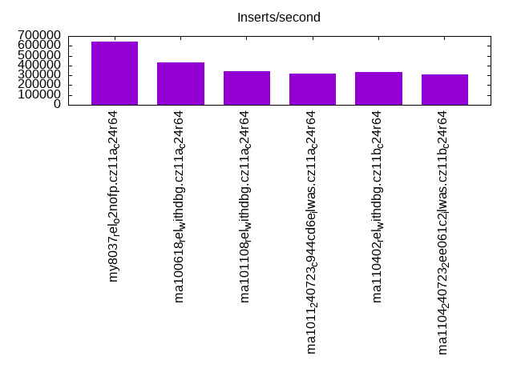
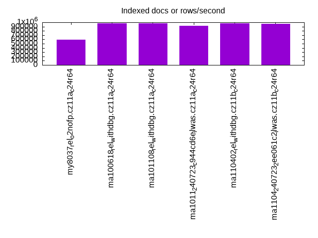
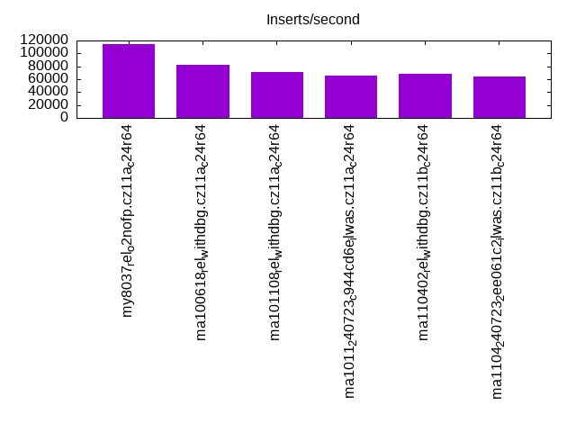
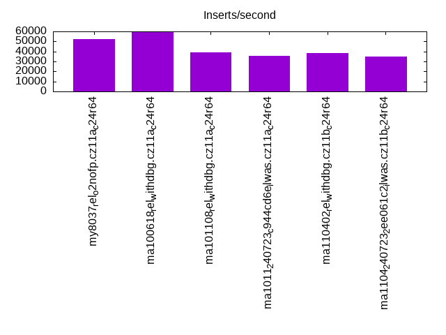
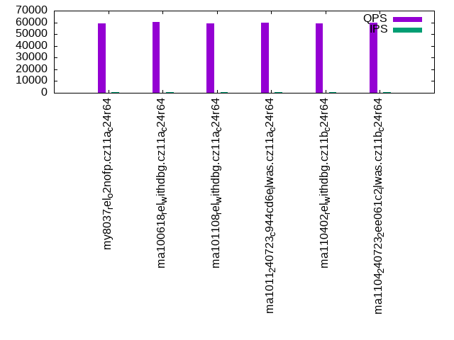
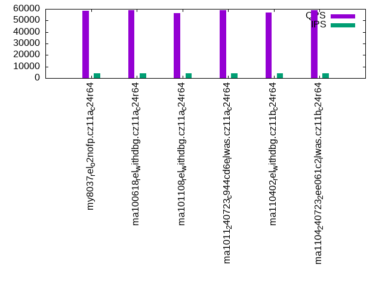
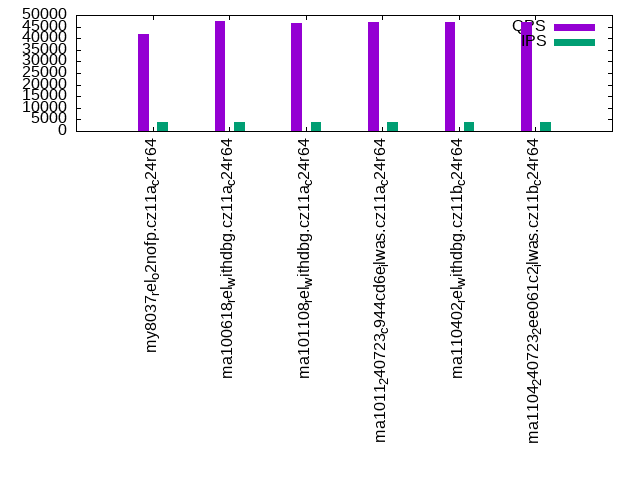
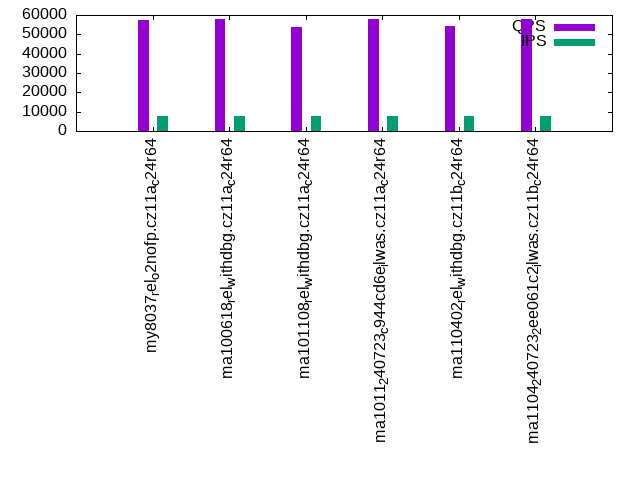
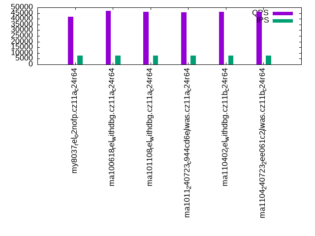

Introduction
This is a report for the insert benchmark with 80M docs and 8 client(s). It is generated by scripts (bash, awk, sed) and Tufte might not be impressed. An overview of the insert benchmark is here and a short update is here. Below, by DBMS, I mean DBMS+version.config. An example is my8020.c10b40 where my means MySQL, 8020 is version 8.0.20 and c10b40 is the name for the configuration file.
The test server has is a c2d-standard-30 with HT off, 16 cores, 64G RAM, Ubuntu 22.04 and ext4 using SW RAID 0 and 2 NVMe devices. The benchmark was run with 8 clients and there were 1 or 3 connections per client (1 for queries or inserts without rate limits, 1+1 for rate limited inserts+deletes). It uses 8 tables with a table per client. It loads 10M rows per table without secondary indexes, creates 3 secondary indexes per table, then inserts 40m+10m rows per table with a delete per insert to avoid growing the table. It then does 6 read+write tests for 1800s each that do queries as fast as possible with 100,100,500,500,1000,1000 inserts/s and the same for deletes/s per client concurrent with the queries. The database is cached by InnoDB. Clients and the DBMS share one server. The per-database configs are in the per-database subdirectories here.
The tested DBMS are:
- my8037_rel_o2nofp.cz11a_c24r64 - MySQL 8.0.37, compiled with -DCMAKE_BUILD_TYPE=Release and -O2
- ma100618_rel_withdbg.cz11a_c24r64 - MariaDB 10.6.18, compiled with -DCMAKE_BUILD_TYPE=RelWithDebInfo
- ma101108_rel_withdbg.cz11a_c24r64 - MariaDB 10.11.8, compiled with -DCMAKE_BUILD_TYPE=RelWithDebInfo
- ma1011_240723_c944cd6e_ilwas.cz11a_c24r64 - MariaDB 10.11, compiled with -DCMAKE_BUILD_TYPE=RelWithDebInfo on July 7, 2024 at git hash c944cd6e
- ma110402_rel_withdbg.cz11b_c24r64 - MariaDB 11.4.2, compiled with -DCMAKE_BUILD_TYPE=RelWithDebInfo
- ma1104_240723_2ee061c2_ilwas.cz11b_c24r64 - MariaDB 11.4, compiled with -DCMAKE_BUILD_TYPE=RelWithDebInfo on July 7, 2024 at git hash 2ee061c2
Contents
- Summary
- l.i0: load without secondary indexes
- l.x: create secondary indexes
- l.i1: continue load after secondary indexes created with 50 inserts per transaction
- l.i2: continue load after secondary indexes created with 5 inserts per transaction
- qr100.L1: range queries with 100 insert/s per client
- qp100.L2: point queries with 100 insert/s per client
- qr500.L3: range queries with 500 insert/s per client
- qp500.L4: point queries with 500 insert/s per client
- qr1000.L5: range queries with 1000 insert/s per client
- qp1000.L6: point queries with 1000 insert/s per client
Summary
The numbers are inserts/s for l.i0, l.i1 and l.i2, indexed docs (or rows) /s for l.x and queries/s for qr100, qp100 thru qr1000, qp1000" The values are the average rate over the entire test for inserts (IPS) and queries (QPS). The range of values for IPS and QPS is split into 3 parts: bottom 25%, middle 50%, top 25%. Values in the bottom 25% have a red background, values in the top 25% have a green background and values in the middle have no color. A gray background is used for values that can be ignored because the DBMS did not sustain the target insert rate. Red backgrounds are not used when the minimum value is within 80% of the max value.
| dbms | l.i0 | l.x | l.i1 | l.i2 | qr100 | qp100 | qr500 | qp500 | qr1000 | qp1000 |
|---|---|---|---|---|---|---|---|---|---|---|
| my8037_rel_o2nofp.cz11a_c24r64 | 640000 | 597016 | 114942 | 52459 | 59115 | 42416 | 58621 | 41753 | 57568 | 41877 |
| ma100618_rel_withdbg.cz11a_c24r64 | 434783 | 975611 | 81967 | 59480 | 60249 | 48748 | 58905 | 47570 | 57900 | 46816 |
| ma101108_rel_withdbg.cz11a_c24r64 | 344828 | 975611 | 71190 | 39005 | 58905 | 47801 | 56366 | 46509 | 53861 | 46218 |
| ma1011_240723_c944cd6e_ilwas.cz11a_c24r64 | 317460 | 919541 | 65884 | 35635 | 59908 | 48102 | 59036 | 46979 | 58123 | 45786 |
| ma110402_rel_withdbg.cz11b_c24r64 | 337553 | 975611 | 67868 | 38168 | 59251 | 48089 | 56684 | 46940 | 54072 | 46314 |
| ma1104_240723_2ee061c2_ilwas.cz11b_c24r64 | 306513 | 963857 | 63732 | 34587 | 59512 | 48116 | 58806 | 47105 | 57937 | 45951 |
This table has relative throughput, throughput for the DBMS relative to the DBMS in the first line, using the absolute throughput from the previous table. Values less than 0.95 have a yellow background. Values greater than 1.05 have a blue background.
| dbms | l.i0 | l.x | l.i1 | l.i2 | qr100 | qp100 | qr500 | qp500 | qr1000 | qp1000 |
|---|---|---|---|---|---|---|---|---|---|---|
| my8037_rel_o2nofp.cz11a_c24r64 | 1.00 | 1.00 | 1.00 | 1.00 | 1.00 | 1.00 | 1.00 | 1.00 | 1.00 | 1.00 |
| ma100618_rel_withdbg.cz11a_c24r64 | 0.68 | 1.63 | 0.71 | 1.13 | 1.02 | 1.15 | 1.00 | 1.14 | 1.01 | 1.12 |
| ma101108_rel_withdbg.cz11a_c24r64 | 0.54 | 1.63 | 0.62 | 0.74 | 1.00 | 1.13 | 0.96 | 1.11 | 0.94 | 1.10 |
| ma1011_240723_c944cd6e_ilwas.cz11a_c24r64 | 0.50 | 1.54 | 0.57 | 0.68 | 1.01 | 1.13 | 1.01 | 1.13 | 1.01 | 1.09 |
| ma110402_rel_withdbg.cz11b_c24r64 | 0.53 | 1.63 | 0.59 | 0.73 | 1.00 | 1.13 | 0.97 | 1.12 | 0.94 | 1.11 |
| ma1104_240723_2ee061c2_ilwas.cz11b_c24r64 | 0.48 | 1.61 | 0.55 | 0.66 | 1.01 | 1.13 | 1.00 | 1.13 | 1.01 | 1.10 |
This lists the average rate of inserts/s for the tests that do inserts concurrent with queries. For such tests the query rate is listed in the table above. The read+write tests are setup so that the insert rate should match the target rate every second. Cells that are not at least 95% of the target have a red background to indicate a failure to satisfy the target.
| dbms | qr100.L1 | qp100.L2 | qr500.L3 | qp500.L4 | qr1000.L5 | qp1000.L6 |
|---|---|---|---|---|---|---|
| my8037_rel_o2nofp.cz11a_c24r64 | 796 | 796 | 3980 | 3980 | 7960 | 7960 |
| ma100618_rel_withdbg.cz11a_c24r64 | 796 | 796 | 3980 | 3980 | 7960 | 7965 |
| ma101108_rel_withdbg.cz11a_c24r64 | 796 | 796 | 3980 | 3980 | 7960 | 7960 |
| ma1011_240723_c944cd6e_ilwas.cz11a_c24r64 | 796 | 796 | 3980 | 3980 | 7965 | 7960 |
| ma110402_rel_withdbg.cz11b_c24r64 | 796 | 796 | 3980 | 3980 | 7960 | 7960 |
| ma1104_240723_2ee061c2_ilwas.cz11b_c24r64 | 796 | 796 | 3980 | 3982 | 7960 | 7960 |
| target | 800 | 800 | 4000 | 4000 | 8000 | 8000 |
l.i0
l.i0: load without secondary indexes. Graphs for performance per 1-second interval are here.
Average throughput:
Insert response time histogram: each cell has the percentage of responses that take <= the time in the header and max is the max response time in seconds. For the max column values in the top 25% of the range have a red background and in the bottom 25% of the range have a green background. The red background is not used when the min value is within 80% of the max value.
| dbms | 256us | 1ms | 4ms | 16ms | 64ms | 256ms | 1s | 4s | 16s | gt | max |
|---|---|---|---|---|---|---|---|---|---|---|---|
| my8037_rel_o2nofp.cz11a_c24r64 | 78.948 | 20.921 | 0.067 | 0.042 | 0.009 | 0.014 | 0.488 | ||||
| ma100618_rel_withdbg.cz11a_c24r64 | 29.617 | 70.153 | 0.190 | 0.007 | 0.002 | 0.032 | 0.447 | ||||
| ma101108_rel_withdbg.cz11a_c24r64 | 7.953 | 89.022 | 2.977 | 0.015 | 0.001 | 0.032 | 0.446 | ||||
| ma1011_240723_c944cd6e_ilwas.cz11a_c24r64 | 8.705 | 84.298 | 6.951 | 0.014 | 0.001 | 0.032 | 0.430 | ||||
| ma110402_rel_withdbg.cz11b_c24r64 | 8.379 | 88.199 | 3.375 | 0.013 | 0.001 | 0.032 | 0.454 | ||||
| ma1104_240723_2ee061c2_ilwas.cz11b_c24r64 | 5.209 | 88.031 | 6.711 | 0.016 | 0.001 | 0.032 | 0.452 |
Performance metrics for the DBMS listed above. Some are normalized by throughput, others are not. Legend for results is here.
ips qps rps rmbps wps wmbps rpq rkbpq wpi wkbpi csps cpups cspq cpupq dbgb1 dbgb2 rss maxop p50 p99 tag 640000 0 0 0.0 1589.2 181.8 0.000 0.000 0.002 0.291 120028 61.6 0.188 15 5.3 55.9 8.9 0.488 95327 54342 my8037_rel_o2nofp.cz11a_c24r64 434783 0 0 0.0 1276.3 105.0 0.000 0.000 0.003 0.247 478073 60.5 1.100 22 5.3 56.1 6.1 0.447 59254 39670 ma100618_rel_withdbg.cz11a_c24r64 344828 0 0 0.0 1091.1 86.7 0.000 0.000 0.003 0.258 222418 48.1 0.645 22 5.3 56.1 5.7 0.446 45362 29876 ma101108_rel_withdbg.cz11a_c24r64 317460 0 0 0.0 1021.2 79.9 0.000 0.000 0.003 0.258 256255 52.6 0.807 27 5.3 56.1 6.0 0.430 40568 25872 ma1011_240723_c944cd6e_ilwas.cz11a_c24r64 337553 0 0 0.0 1072.9 84.8 0.000 0.000 0.003 0.257 246747 47.8 0.731 23 5.3 56.1 6.3 0.454 44253 29768 ma110402_rel_withdbg.cz11b_c24r64 306513 0 0 0.0 983.4 77.0 0.000 0.000 0.003 0.257 288857 52.0 0.942 27 5.3 56.1 5.8 0.452 39358 25872 ma1104_240723_2ee061c2_ilwas.cz11b_c24r64
l.x
l.x: create secondary indexes.
Average throughput:
Performance metrics for the DBMS listed above. Some are normalized by throughput, others are not. Legend for results is here.
ips qps rps rmbps wps wmbps rpq rkbpq wpi wkbpi csps cpups cspq cpupq dbgb1 dbgb2 rss maxop p50 p99 tag 597016 0 3488 210.8 13286.7 640.5 0.006 0.362 0.022 1.099 40304 47.8 0.068 13 12.1 62.7 14.2 0.002 NA NA my8037_rel_o2nofp.cz11a_c24r64 975611 0 0 0.0 4308.4 692.1 0.000 0.000 0.004 0.726 14322 25.9 0.015 4 11.2 62.1 10.0 0.001 NA NA ma100618_rel_withdbg.cz11a_c24r64 975611 0 0 0.0 3933.3 685.2 0.000 0.000 0.004 0.719 12374 27.0 0.013 4 11.2 62.1 9.7 0.001 NA NA ma101108_rel_withdbg.cz11a_c24r64 919541 0 0 0.0 4122.5 657.8 0.000 0.000 0.004 0.733 13243 27.4 0.014 5 11.2 62.1 9.5 0.001 NA NA ma1011_240723_c944cd6e_ilwas.cz11a_c24r64 975611 0 0 0.0 3850.4 684.9 0.000 0.000 0.004 0.719 12391 27.2 0.013 4 11.2 62.1 9.8 0.001 NA NA ma110402_rel_withdbg.cz11b_c24r64 963857 0 0 0.0 3988.1 687.1 0.000 0.000 0.004 0.730 12306 28.4 0.013 5 11.2 62.1 9.6 0.001 NA NA ma1104_240723_2ee061c2_ilwas.cz11b_c24r64
l.i1
l.i1: continue load after secondary indexes created with 50 inserts per transaction. Graphs for performance per 1-second interval are here.
Average throughput:
Insert response time histogram: each cell has the percentage of responses that take <= the time in the header and max is the max response time in seconds. For the max column values in the top 25% of the range have a red background and in the bottom 25% of the range have a green background. The red background is not used when the min value is within 80% of the max value.
| dbms | 256us | 1ms | 4ms | 16ms | 64ms | 256ms | 1s | 4s | 16s | gt | max |
|---|---|---|---|---|---|---|---|---|---|---|---|
| my8037_rel_o2nofp.cz11a_c24r64 | 80.216 | 19.407 | 0.320 | 0.038 | 0.018 | nonzero | 1.242 | ||||
| ma100618_rel_withdbg.cz11a_c24r64 | 0.008 | 38.927 | 60.480 | 0.511 | 0.026 | 0.048 | 0.735 | ||||
| ma101108_rel_withdbg.cz11a_c24r64 | 0.001 | 26.880 | 71.980 | 1.085 | 0.028 | 0.026 | 0.728 | ||||
| ma1011_240723_c944cd6e_ilwas.cz11a_c24r64 | 0.008 | 16.593 | 82.686 | 0.650 | 0.018 | 0.046 | nonzero | 1.061 | |||
| ma110402_rel_withdbg.cz11b_c24r64 | 0.001 | 21.293 | 77.565 | 1.094 | 0.021 | 0.025 | 0.650 | ||||
| ma1104_240723_2ee061c2_ilwas.cz11b_c24r64 | 0.007 | 15.255 | 83.969 | 0.709 | 0.019 | 0.041 | 0.728 |
Delete response time histogram: each cell has the percentage of responses that take <= the time in the header and max is the max response time in seconds. For the max column values in the top 25% of the range have a red background and in the bottom 25% of the range have a green background. The red background is not used when the min value is within 80% of the max value.
| dbms | 256us | 1ms | 4ms | 16ms | 64ms | 256ms | 1s | 4s | 16s | gt | max |
|---|---|---|---|---|---|---|---|---|---|---|---|
| my8037_rel_o2nofp.cz11a_c24r64 | 0.070 | 85.464 | 14.175 | 0.245 | 0.030 | 0.016 | 0.699 | ||||
| ma100618_rel_withdbg.cz11a_c24r64 | 0.060 | 58.050 | 41.459 | 0.363 | 0.025 | 0.043 | 0.741 | ||||
| ma101108_rel_withdbg.cz11a_c24r64 | 0.027 | 41.785 | 57.293 | 0.851 | 0.021 | 0.023 | 0.728 | ||||
| ma1011_240723_c944cd6e_ilwas.cz11a_c24r64 | 0.065 | 30.360 | 69.065 | 0.449 | 0.018 | 0.043 | 0.771 | ||||
| ma110402_rel_withdbg.cz11b_c24r64 | 0.021 | 32.975 | 66.093 | 0.872 | 0.017 | 0.022 | 0.649 | ||||
| ma1104_240723_2ee061c2_ilwas.cz11b_c24r64 | 0.050 | 21.547 | 77.758 | 0.588 | 0.018 | 0.038 | 0.726 |
Performance metrics for the DBMS listed above. Some are normalized by throughput, others are not. Legend for results is here.
ips qps rps rmbps wps wmbps rpq rkbpq wpi wkbpi csps cpups cspq cpupq dbgb1 dbgb2 rss maxop p50 p99 tag 114942 0 139 2.2 8087.0 386.5 0.001 0.019 0.070 3.443 180773 77.6 1.573 108 17.3 68.1 21.4 1.242 15038 6293 my8037_rel_o2nofp.cz11a_c24r64 81967 0 0 0.0 8432.4 308.9 0.000 0.000 0.103 3.860 594816 73.4 7.257 143 17.0 69.4 19.7 0.735 10538 4595 ma100618_rel_withdbg.cz11a_c24r64 71190 0 2644 10.3 6714.8 260.8 0.037 0.149 0.094 3.752 295989 54.8 4.158 123 16.0 67.8 16.9 0.728 8990 5646 ma101108_rel_withdbg.cz11a_c24r64 65884 0 0 0.0 6990.8 251.0 0.000 0.000 0.106 3.901 338770 68.8 5.142 167 17.1 69.4 19.6 1.061 8392 3746 ma1011_240723_c944cd6e_ilwas.cz11a_c24r64 67868 0 2621 10.2 6568.3 251.5 0.039 0.154 0.097 3.794 314418 53.9 4.633 127 15.2 66.4 16.5 0.650 8590 5744 ma110402_rel_withdbg.cz11b_c24r64 63732 0 0 0.0 6841.5 250.4 0.000 0.000 0.107 4.023 356516 67.2 5.594 169 16.0 68.5 18.6 0.728 8141 4196 ma1104_240723_2ee061c2_ilwas.cz11b_c24r64
l.i2
l.i2: continue load after secondary indexes created with 5 inserts per transaction. Graphs for performance per 1-second interval are here.
Average throughput:
Insert response time histogram: each cell has the percentage of responses that take <= the time in the header and max is the max response time in seconds. For the max column values in the top 25% of the range have a red background and in the bottom 25% of the range have a green background. The red background is not used when the min value is within 80% of the max value.
| dbms | 256us | 1ms | 4ms | 16ms | 64ms | 256ms | 1s | 4s | 16s | gt | max |
|---|---|---|---|---|---|---|---|---|---|---|---|
| my8037_rel_o2nofp.cz11a_c24r64 | 0.237 | 85.768 | 13.879 | 0.083 | 0.029 | 0.002 | 0.003 | 0.571 | |||
| ma100618_rel_withdbg.cz11a_c24r64 | 2.759 | 88.806 | 8.147 | 0.273 | 0.011 | nonzero | 0.004 | 0.594 | |||
| ma101108_rel_withdbg.cz11a_c24r64 | 0.322 | 69.724 | 29.612 | 0.283 | 0.055 | nonzero | 0.004 | 0.512 | |||
| ma1011_240723_c944cd6e_ilwas.cz11a_c24r64 | 0.497 | 50.847 | 48.398 | 0.238 | 0.016 | nonzero | 0.004 | 0.543 | |||
| ma110402_rel_withdbg.cz11b_c24r64 | 0.306 | 67.273 | 32.087 | 0.275 | 0.054 | 0.001 | 0.004 | 0.503 | |||
| ma1104_240723_2ee061c2_ilwas.cz11b_c24r64 | 0.519 | 48.514 | 50.709 | 0.249 | 0.006 | 0.004 | 0.532 |
Delete response time histogram: each cell has the percentage of responses that take <= the time in the header and max is the max response time in seconds. For the max column values in the top 25% of the range have a red background and in the bottom 25% of the range have a green background. The red background is not used when the min value is within 80% of the max value.
| dbms | 256us | 1ms | 4ms | 16ms | 64ms | 256ms | 1s | 4s | 16s | gt | max |
|---|---|---|---|---|---|---|---|---|---|---|---|
| my8037_rel_o2nofp.cz11a_c24r64 | 0.318 | 86.344 | 13.222 | 0.082 | 0.029 | 0.002 | 0.003 | 0.569 | |||
| ma100618_rel_withdbg.cz11a_c24r64 | 3.327 | 88.075 | 8.329 | 0.255 | 0.010 | nonzero | 0.004 | 0.593 | |||
| ma101108_rel_withdbg.cz11a_c24r64 | 0.386 | 69.979 | 29.309 | 0.267 | 0.055 | 0.001 | 0.004 | 0.512 | |||
| ma1011_240723_c944cd6e_ilwas.cz11a_c24r64 | 0.709 | 53.294 | 45.764 | 0.213 | 0.015 | nonzero | 0.004 | 0.543 | |||
| ma110402_rel_withdbg.cz11b_c24r64 | 0.374 | 67.372 | 31.934 | 0.263 | 0.053 | nonzero | 0.004 | 0.502 | |||
| ma1104_240723_2ee061c2_ilwas.cz11b_c24r64 | 0.507 | 48.425 | 50.824 | 0.234 | 0.005 | 0.004 | 0.532 |
Performance metrics for the DBMS listed above. Some are normalized by throughput, others are not. Legend for results is here.
ips qps rps rmbps wps wmbps rpq rkbpq wpi wkbpi csps cpups cspq cpupq dbgb1 dbgb2 rss maxop p50 p99 tag 52459 0 0 0.0 4580.7 199.2 0.000 0.000 0.087 3.889 263807 71.5 5.029 218 17.3 68.1 21.4 0.571 6694 3501 my8037_rel_o2nofp.cz11a_c24r64 59480 0 0 0.0 5272.4 209.7 0.000 0.000 0.089 3.610 396907 70.4 6.673 189 17.0 69.4 19.8 0.594 7597 4860 ma100618_rel_withdbg.cz11a_c24r64 39005 0 3595 14.0 3578.5 142.7 0.092 0.369 0.092 3.747 274281 46.8 7.032 192 16.0 67.8 16.7 0.512 4935 3296 ma101108_rel_withdbg.cz11a_c24r64 35635 0 0 0.0 3311.3 131.8 0.000 0.000 0.093 3.787 480863 58.2 13.494 261 17.1 69.4 19.7 0.543 4507 3097 ma1011_240723_c944cd6e_ilwas.cz11a_c24r64 38168 0 3552 13.9 3523.6 139.9 0.093 0.372 0.092 3.753 279046 46.5 7.311 195 15.2 66.4 16.4 0.503 4824 3316 ma110402_rel_withdbg.cz11b_c24r64 34587 0 0 0.0 3137.6 125.1 0.000 0.000 0.091 3.703 476226 57.7 13.769 267 16.0 68.5 18.6 0.532 4351 3097 ma1104_240723_2ee061c2_ilwas.cz11b_c24r64
qr100.L1
qr100.L1: range queries with 100 insert/s per client. Graphs for performance per 1-second interval are here.
Average throughput:
Query response time histogram: each cell has the percentage of responses that take <= the time in the header and max is the max response time in seconds. For max values in the top 25% of the range have a red background and in the bottom 25% of the range have a green background. The red background is not used when the min value is within 80% of the max value.
| dbms | 256us | 1ms | 4ms | 16ms | 64ms | 256ms | 1s | 4s | 16s | gt | max |
|---|---|---|---|---|---|---|---|---|---|---|---|
| my8037_rel_o2nofp.cz11a_c24r64 | 99.964 | 0.036 | 0.001 | nonzero | 0.013 | ||||||
| ma100618_rel_withdbg.cz11a_c24r64 | 99.973 | 0.026 | 0.001 | 0.004 | |||||||
| ma101108_rel_withdbg.cz11a_c24r64 | 99.967 | 0.032 | 0.001 | nonzero | 0.006 | ||||||
| ma1011_240723_c944cd6e_ilwas.cz11a_c24r64 | 99.977 | 0.022 | 0.001 | 0.004 | |||||||
| ma110402_rel_withdbg.cz11b_c24r64 | 99.964 | 0.034 | 0.002 | nonzero | 0.005 | ||||||
| ma1104_240723_2ee061c2_ilwas.cz11b_c24r64 | 99.979 | 0.020 | 0.001 | nonzero | 0.004 |
Insert response time histogram: each cell has the percentage of responses that take <= the time in the header and max is the max response time in seconds. For max values in the top 25% of the range have a red background and in the bottom 25% of the range have a green background. The red background is not used when the min value is within 80% of the max value.
| dbms | 256us | 1ms | 4ms | 16ms | 64ms | 256ms | 1s | 4s | 16s | gt | max |
|---|---|---|---|---|---|---|---|---|---|---|---|
| my8037_rel_o2nofp.cz11a_c24r64 | 98.330 | 1.670 | 0.009 | ||||||||
| ma100618_rel_withdbg.cz11a_c24r64 | 0.267 | 98.753 | 0.979 | 0.012 | |||||||
| ma101108_rel_withdbg.cz11a_c24r64 | 0.014 | 80.569 | 19.417 | 0.008 | |||||||
| ma1011_240723_c944cd6e_ilwas.cz11a_c24r64 | 1.479 | 86.851 | 11.670 | 0.007 | |||||||
| ma110402_rel_withdbg.cz11b_c24r64 | 0.007 | 74.483 | 25.510 | 0.008 | |||||||
| ma1104_240723_2ee061c2_ilwas.cz11b_c24r64 | 0.174 | 95.285 | 4.542 | 0.007 |
Delete response time histogram: each cell has the percentage of responses that take <= the time in the header and max is the max response time in seconds. For max values in the top 25% of the range have a red background and in the bottom 25% of the range have a green background. The red background is not used when the min value is within 80% of the max value.
| dbms | 256us | 1ms | 4ms | 16ms | 64ms | 256ms | 1s | 4s | 16s | gt | max |
|---|---|---|---|---|---|---|---|---|---|---|---|
| my8037_rel_o2nofp.cz11a_c24r64 | 0.597 | 98.455 | 0.948 | 0.010 | |||||||
| ma100618_rel_withdbg.cz11a_c24r64 | 7.135 | 92.233 | 0.632 | 0.009 | |||||||
| ma101108_rel_withdbg.cz11a_c24r64 | 0.330 | 84.872 | 14.799 | 0.009 | |||||||
| ma1011_240723_c944cd6e_ilwas.cz11a_c24r64 | 10.781 | 81.875 | 7.344 | 0.007 | |||||||
| ma110402_rel_withdbg.cz11b_c24r64 | 0.278 | 80.076 | 19.646 | 0.008 | |||||||
| ma1104_240723_2ee061c2_ilwas.cz11b_c24r64 | 1.833 | 95.622 | 2.545 | 0.008 |
Performance metrics for the DBMS listed above. Some are normalized by throughput, others are not. Legend for results is here.
ips qps rps rmbps wps wmbps rpq rkbpq wpi wkbpi csps cpups cspq cpupq dbgb1 dbgb2 rss maxop p50 p99 tag 796 59115 0 0.0 1002.1 28.5 0.000 0.000 1.259 36.656 219994 50.3 3.721 136 17.3 68.1 21.4 0.013 7480 7224 my8037_rel_o2nofp.cz11a_c24r64 796 60249 0 0.0 5.0 0.8 0.000 0.000 0.006 1.080 226620 50.5 3.761 134 17.0 69.4 19.4 0.004 7576 7352 ma100618_rel_withdbg.cz11a_c24r64 796 58905 22 0.1 5.0 0.9 0.000 0.001 0.006 1.100 220422 50.4 3.742 137 16.0 67.8 16.5 0.006 7464 7240 ma101108_rel_withdbg.cz11a_c24r64 796 59908 0 0.0 5.1 0.9 0.000 0.000 0.006 1.114 225518 50.5 3.764 135 17.1 69.4 19.3 0.004 7544 7306 ma1011_240723_c944cd6e_ilwas.cz11a_c24r64 796 59251 24 0.1 5.1 0.9 0.000 0.002 0.006 1.104 222354 50.5 3.753 136 15.2 66.4 16.3 0.005 7442 7192 ma110402_rel_withdbg.cz11b_c24r64 796 59512 0 0.0 5.1 0.9 0.000 0.000 0.006 1.104 223467 50.5 3.755 136 16.0 68.5 18.2 0.004 7464 7256 ma1104_240723_2ee061c2_ilwas.cz11b_c24r64
qp100.L2
qp100.L2: point queries with 100 insert/s per client. Graphs for performance per 1-second interval are here.
Average throughput:

Query response time histogram: each cell has the percentage of responses that take <= the time in the header and max is the max response time in seconds. For max values in the top 25% of the range have a red background and in the bottom 25% of the range have a green background. The red background is not used when the min value is within 80% of the max value.
| dbms | 256us | 1ms | 4ms | 16ms | 64ms | 256ms | 1s | 4s | 16s | gt | max |
|---|---|---|---|---|---|---|---|---|---|---|---|
| my8037_rel_o2nofp.cz11a_c24r64 | 98.499 | 1.491 | 0.010 | 0.004 | |||||||
| ma100618_rel_withdbg.cz11a_c24r64 | 99.320 | 0.674 | 0.006 | 0.004 | |||||||
| ma101108_rel_withdbg.cz11a_c24r64 | 99.276 | 0.717 | 0.008 | nonzero | 0.004 | ||||||
| ma1011_240723_c944cd6e_ilwas.cz11a_c24r64 | 99.254 | 0.738 | 0.008 | nonzero | 0.007 | ||||||
| ma110402_rel_withdbg.cz11b_c24r64 | 99.279 | 0.713 | 0.009 | 0.004 | |||||||
| ma1104_240723_2ee061c2_ilwas.cz11b_c24r64 | 99.242 | 0.750 | 0.008 | nonzero | 0.005 |
Insert response time histogram: each cell has the percentage of responses that take <= the time in the header and max is the max response time in seconds. For max values in the top 25% of the range have a red background and in the bottom 25% of the range have a green background. The red background is not used when the min value is within 80% of the max value.
| dbms | 256us | 1ms | 4ms | 16ms | 64ms | 256ms | 1s | 4s | 16s | gt | max |
|---|---|---|---|---|---|---|---|---|---|---|---|
| my8037_rel_o2nofp.cz11a_c24r64 | 99.677 | 0.323 | 0.006 | ||||||||
| ma100618_rel_withdbg.cz11a_c24r64 | 0.003 | 95.611 | 4.385 | 0.006 | |||||||
| ma101108_rel_withdbg.cz11a_c24r64 | 0.028 | 77.042 | 22.931 | 0.008 | |||||||
| ma1011_240723_c944cd6e_ilwas.cz11a_c24r64 | 0.010 | 61.639 | 38.351 | 0.008 | |||||||
| ma110402_rel_withdbg.cz11b_c24r64 | 0.125 | 91.375 | 8.500 | 0.008 | |||||||
| ma1104_240723_2ee061c2_ilwas.cz11b_c24r64 | 0.017 | 71.941 | 28.042 | 0.008 |
Delete response time histogram: each cell has the percentage of responses that take <= the time in the header and max is the max response time in seconds. For max values in the top 25% of the range have a red background and in the bottom 25% of the range have a green background. The red background is not used when the min value is within 80% of the max value.
| dbms | 256us | 1ms | 4ms | 16ms | 64ms | 256ms | 1s | 4s | 16s | gt | max |
|---|---|---|---|---|---|---|---|---|---|---|---|
| my8037_rel_o2nofp.cz11a_c24r64 | 0.049 | 99.851 | 0.101 | 0.006 | |||||||
| ma100618_rel_withdbg.cz11a_c24r64 | 0.420 | 97.934 | 1.646 | 0.006 | |||||||
| ma101108_rel_withdbg.cz11a_c24r64 | 0.378 | 84.531 | 15.090 | 0.008 | |||||||
| ma1011_240723_c944cd6e_ilwas.cz11a_c24r64 | 0.250 | 72.792 | 26.958 | 0.007 | |||||||
| ma110402_rel_withdbg.cz11b_c24r64 | 0.545 | 94.465 | 4.990 | 0.013 | |||||||
| ma1104_240723_2ee061c2_ilwas.cz11b_c24r64 | 0.361 | 78.757 | 20.882 | 0.008 |
Performance metrics for the DBMS listed above. Some are normalized by throughput, others are not. Legend for results is here.
ips qps rps rmbps wps wmbps rpq rkbpq wpi wkbpi csps cpups cspq cpupq dbgb1 dbgb2 rss maxop p50 p99 tag 796 42416 0 0.0 109.5 3.7 0.000 0.000 0.138 4.768 165233 48.7 3.896 184 17.3 68.2 21.4 0.004 5335 5210 my8037_rel_o2nofp.cz11a_c24r64 796 48748 0 0.0 10.4 1.0 0.000 0.000 0.013 1.292 190109 49.1 3.900 161 17.0 69.4 19.4 0.004 6121 5914 ma100618_rel_withdbg.cz11a_c24r64 796 47801 23 0.1 5.0 0.8 0.000 0.002 0.006 1.090 186157 48.9 3.894 164 16.0 67.8 16.5 0.004 6010 5802 ma101108_rel_withdbg.cz11a_c24r64 796 48102 0 0.0 10.6 1.0 0.000 0.000 0.013 1.327 187610 49.1 3.900 163 17.1 69.4 19.3 0.007 6042 5850 ma1011_240723_c944cd6e_ilwas.cz11a_c24r64 796 48089 23 0.1 10.8 1.0 0.000 0.002 0.014 1.323 186848 48.9 3.885 163 15.2 66.4 16.3 0.004 6042 5877 ma110402_rel_withdbg.cz11b_c24r64 796 48116 0 0.0 5.1 0.9 0.000 0.000 0.006 1.097 187351 48.9 3.894 163 16.0 68.5 18.2 0.005 6027 5850 ma1104_240723_2ee061c2_ilwas.cz11b_c24r64
qr500.L3
qr500.L3: range queries with 500 insert/s per client. Graphs for performance per 1-second interval are here.
Average throughput:
Query response time histogram: each cell has the percentage of responses that take <= the time in the header and max is the max response time in seconds. For max values in the top 25% of the range have a red background and in the bottom 25% of the range have a green background. The red background is not used when the min value is within 80% of the max value.
| dbms | 256us | 1ms | 4ms | 16ms | 64ms | 256ms | 1s | 4s | 16s | gt | max |
|---|---|---|---|---|---|---|---|---|---|---|---|
| my8037_rel_o2nofp.cz11a_c24r64 | 99.920 | 0.063 | 0.015 | 0.001 | nonzero | 0.025 | |||||
| ma100618_rel_withdbg.cz11a_c24r64 | 99.801 | 0.191 | 0.006 | 0.002 | nonzero | 0.033 | |||||
| ma101108_rel_withdbg.cz11a_c24r64 | 99.536 | 0.450 | 0.012 | 0.002 | nonzero | 0.033 | |||||
| ma1011_240723_c944cd6e_ilwas.cz11a_c24r64 | 99.884 | 0.109 | 0.005 | 0.002 | nonzero | 0.033 | |||||
| ma110402_rel_withdbg.cz11b_c24r64 | 99.567 | 0.421 | 0.012 | nonzero | nonzero | 0.016 | |||||
| ma1104_240723_2ee061c2_ilwas.cz11b_c24r64 | 99.881 | 0.115 | 0.004 | nonzero | nonzero | 0.036 |
Insert response time histogram: each cell has the percentage of responses that take <= the time in the header and max is the max response time in seconds. For max values in the top 25% of the range have a red background and in the bottom 25% of the range have a green background. The red background is not used when the min value is within 80% of the max value.
| dbms | 256us | 1ms | 4ms | 16ms | 64ms | 256ms | 1s | 4s | 16s | gt | max |
|---|---|---|---|---|---|---|---|---|---|---|---|
| my8037_rel_o2nofp.cz11a_c24r64 | 84.204 | 15.693 | 0.103 | 0.026 | |||||||
| ma100618_rel_withdbg.cz11a_c24r64 | 0.408 | 83.742 | 15.809 | 0.042 | 0.034 | ||||||
| ma101108_rel_withdbg.cz11a_c24r64 | 0.044 | 56.171 | 43.742 | 0.043 | 0.035 | ||||||
| ma1011_240723_c944cd6e_ilwas.cz11a_c24r64 | 0.235 | 51.901 | 47.808 | 0.056 | 0.031 | ||||||
| ma110402_rel_withdbg.cz11b_c24r64 | 0.028 | 49.190 | 50.745 | 0.036 | 0.052 | ||||||
| ma1104_240723_2ee061c2_ilwas.cz11b_c24r64 | 0.162 | 43.905 | 55.863 | 0.071 | 0.045 |
Delete response time histogram: each cell has the percentage of responses that take <= the time in the header and max is the max response time in seconds. For max values in the top 25% of the range have a red background and in the bottom 25% of the range have a green background. The red background is not used when the min value is within 80% of the max value.
| dbms | 256us | 1ms | 4ms | 16ms | 64ms | 256ms | 1s | 4s | 16s | gt | max |
|---|---|---|---|---|---|---|---|---|---|---|---|
| my8037_rel_o2nofp.cz11a_c24r64 | 0.460 | 89.476 | 10.032 | 0.033 | 0.021 | ||||||
| ma100618_rel_withdbg.cz11a_c24r64 | 0.762 | 89.319 | 9.892 | 0.027 | 0.030 | ||||||
| ma101108_rel_withdbg.cz11a_c24r64 | 0.128 | 66.674 | 33.170 | 0.027 | 0.031 | ||||||
| ma1011_240723_c944cd6e_ilwas.cz11a_c24r64 | 0.401 | 61.578 | 37.988 | 0.034 | 0.029 | ||||||
| ma110402_rel_withdbg.cz11b_c24r64 | 0.113 | 58.227 | 41.636 | 0.024 | 0.027 | ||||||
| ma1104_240723_2ee061c2_ilwas.cz11b_c24r64 | 0.224 | 50.564 | 49.178 | 0.035 | 0.027 |
Performance metrics for the DBMS listed above. Some are normalized by throughput, others are not. Legend for results is here.
ips qps rps rmbps wps wmbps rpq rkbpq wpi wkbpi csps cpups cspq cpupq dbgb1 dbgb2 rss maxop p50 p99 tag 3980 58621 0 0.0 587.4 20.8 0.000 0.000 0.148 5.348 215022 51.8 3.668 141 17.3 68.2 21.4 0.025 7336 7081 my8037_rel_o2nofp.cz11a_c24r64 3980 58905 0 0.0 254.4 10.7 0.000 0.000 0.064 2.766 223244 51.9 3.790 141 17.0 69.4 19.4 0.033 7448 6920 ma100618_rel_withdbg.cz11a_c24r64 3980 56366 118 0.5 254.1 10.8 0.002 0.008 0.064 2.781 210830 51.4 3.740 146 16.0 67.8 16.6 0.033 7096 6553 ma101108_rel_withdbg.cz11a_c24r64 3980 59036 0 0.0 256.1 10.9 0.000 0.000 0.064 2.812 224361 52.4 3.800 142 17.1 69.4 19.4 0.033 7448 6953 ma1011_240723_c944cd6e_ilwas.cz11a_c24r64 3980 56684 121 0.5 255.2 10.8 0.002 0.009 0.064 2.781 211942 51.5 3.739 145 15.2 66.4 16.3 0.016 7096 6660 ma110402_rel_withdbg.cz11b_c24r64 3980 58806 0 0.0 262.3 10.9 0.000 0.000 0.066 2.817 223787 52.4 3.806 143 16.0 68.5 18.3 0.036 7371 7128 ma1104_240723_2ee061c2_ilwas.cz11b_c24r64
qp500.L4
qp500.L4: point queries with 500 insert/s per client. Graphs for performance per 1-second interval are here.
Average throughput:
Query response time histogram: each cell has the percentage of responses that take <= the time in the header and max is the max response time in seconds. For max values in the top 25% of the range have a red background and in the bottom 25% of the range have a green background. The red background is not used when the min value is within 80% of the max value.
| dbms | 256us | 1ms | 4ms | 16ms | 64ms | 256ms | 1s | 4s | 16s | gt | max |
|---|---|---|---|---|---|---|---|---|---|---|---|
| my8037_rel_o2nofp.cz11a_c24r64 | 97.833 | 2.096 | 0.070 | 0.002 | nonzero | 0.017 | |||||
| ma100618_rel_withdbg.cz11a_c24r64 | 98.428 | 1.553 | 0.019 | nonzero | 0.011 | ||||||
| ma101108_rel_withdbg.cz11a_c24r64 | 98.350 | 1.628 | 0.021 | nonzero | 0.010 | ||||||
| ma1011_240723_c944cd6e_ilwas.cz11a_c24r64 | 98.296 | 1.687 | 0.017 | nonzero | 0.011 | ||||||
| ma110402_rel_withdbg.cz11b_c24r64 | 98.359 | 1.617 | 0.024 | 0.001 | 0.010 | ||||||
| ma1104_240723_2ee061c2_ilwas.cz11b_c24r64 | 98.265 | 1.716 | 0.019 | nonzero | 0.009 |
Insert response time histogram: each cell has the percentage of responses that take <= the time in the header and max is the max response time in seconds. For max values in the top 25% of the range have a red background and in the bottom 25% of the range have a green background. The red background is not used when the min value is within 80% of the max value.
| dbms | 256us | 1ms | 4ms | 16ms | 64ms | 256ms | 1s | 4s | 16s | gt | max |
|---|---|---|---|---|---|---|---|---|---|---|---|
| my8037_rel_o2nofp.cz11a_c24r64 | 87.244 | 12.734 | 0.022 | 0.020 | |||||||
| ma100618_rel_withdbg.cz11a_c24r64 | 0.454 | 85.808 | 13.694 | 0.044 | 0.027 | ||||||
| ma101108_rel_withdbg.cz11a_c24r64 | 0.028 | 52.990 | 46.942 | 0.039 | 0.027 | ||||||
| ma1011_240723_c944cd6e_ilwas.cz11a_c24r64 | 0.125 | 40.114 | 59.708 | 0.053 | 0.030 | ||||||
| ma110402_rel_withdbg.cz11b_c24r64 | 0.010 | 43.119 | 56.824 | 0.047 | 0.030 | ||||||
| ma1104_240723_2ee061c2_ilwas.cz11b_c24r64 | 0.097 | 35.429 | 64.415 | 0.059 | 0.032 |
Delete response time histogram: each cell has the percentage of responses that take <= the time in the header and max is the max response time in seconds. For max values in the top 25% of the range have a red background and in the bottom 25% of the range have a green background. The red background is not used when the min value is within 80% of the max value.
| dbms | 256us | 1ms | 4ms | 16ms | 64ms | 256ms | 1s | 4s | 16s | gt | max |
|---|---|---|---|---|---|---|---|---|---|---|---|
| my8037_rel_o2nofp.cz11a_c24r64 | 0.177 | 91.663 | 8.151 | 0.009 | 0.020 | ||||||
| ma100618_rel_withdbg.cz11a_c24r64 | 0.655 | 91.099 | 8.221 | 0.026 | 0.027 | ||||||
| ma101108_rel_withdbg.cz11a_c24r64 | 0.084 | 64.676 | 35.206 | 0.033 | 0.027 | ||||||
| ma1011_240723_c944cd6e_ilwas.cz11a_c24r64 | 0.279 | 50.262 | 49.428 | 0.031 | 0.031 | ||||||
| ma110402_rel_withdbg.cz11b_c24r64 | 0.057 | 53.001 | 46.907 | 0.035 | 0.028 | ||||||
| ma1104_240723_2ee061c2_ilwas.cz11b_c24r64 | 0.104 | 41.513 | 58.344 | 0.040 | 0.035 |
Performance metrics for the DBMS listed above. Some are normalized by throughput, others are not. Legend for results is here.
ips qps rps rmbps wps wmbps rpq rkbpq wpi wkbpi csps cpups cspq cpupq dbgb1 dbgb2 rss maxop p50 p99 tag 3980 41753 0 0.0 599.6 21.2 0.000 0.000 0.151 5.453 157945 50.4 3.783 193 17.3 68.4 21.4 0.017 5239 5068 my8037_rel_o2nofp.cz11a_c24r64 3980 47570 0 0.0 424.8 15.7 0.000 0.000 0.107 4.033 192140 50.4 4.039 170 17.0 69.4 19.4 0.011 5963 5770 ma100618_rel_withdbg.cz11a_c24r64 3980 46509 123 0.5 434.4 16.0 0.003 0.011 0.109 4.115 184627 50.1 3.970 172 16.0 67.8 16.6 0.010 5849 5645 ma101108_rel_withdbg.cz11a_c24r64 3980 46979 0 0.0 435.4 16.1 0.000 0.000 0.109 4.136 190537 50.5 4.056 172 17.1 69.4 19.4 0.011 5898 5705 ma1011_240723_c944cd6e_ilwas.cz11a_c24r64 3980 46940 122 0.5 437.4 16.0 0.003 0.010 0.110 4.119 187350 50.2 3.991 171 15.2 66.4 16.3 0.010 5913 5722 ma110402_rel_withdbg.cz11b_c24r64 3982 47105 0 0.0 434.0 16.0 0.000 0.000 0.109 4.107 191650 50.5 4.069 172 16.0 68.5 18.2 0.009 5902 5706 ma1104_240723_2ee061c2_ilwas.cz11b_c24r64
qr1000.L5
qr1000.L5: range queries with 1000 insert/s per client. Graphs for performance per 1-second interval are here.
Average throughput:
Query response time histogram: each cell has the percentage of responses that take <= the time in the header and max is the max response time in seconds. For max values in the top 25% of the range have a red background and in the bottom 25% of the range have a green background. The red background is not used when the min value is within 80% of the max value.
| dbms | 256us | 1ms | 4ms | 16ms | 64ms | 256ms | 1s | 4s | 16s | gt | max |
|---|---|---|---|---|---|---|---|---|---|---|---|
| my8037_rel_o2nofp.cz11a_c24r64 | 99.751 | 0.206 | 0.040 | 0.003 | nonzero | 0.032 | |||||
| ma100618_rel_withdbg.cz11a_c24r64 | 99.572 | 0.411 | 0.012 | 0.005 | nonzero | 0.044 | |||||
| ma101108_rel_withdbg.cz11a_c24r64 | 98.641 | 1.328 | 0.024 | 0.006 | nonzero | 0.026 | |||||
| ma1011_240723_c944cd6e_ilwas.cz11a_c24r64 | 99.786 | 0.198 | 0.010 | 0.006 | nonzero | 0.051 | |||||
| ma110402_rel_withdbg.cz11b_c24r64 | 98.643 | 1.331 | 0.025 | 0.001 | nonzero | 0.019 | |||||
| ma1104_240723_2ee061c2_ilwas.cz11b_c24r64 | 99.773 | 0.217 | 0.009 | 0.001 | nonzero | 0.024 |
Insert response time histogram: each cell has the percentage of responses that take <= the time in the header and max is the max response time in seconds. For max values in the top 25% of the range have a red background and in the bottom 25% of the range have a green background. The red background is not used when the min value is within 80% of the max value.
| dbms | 256us | 1ms | 4ms | 16ms | 64ms | 256ms | 1s | 4s | 16s | gt | max |
|---|---|---|---|---|---|---|---|---|---|---|---|
| my8037_rel_o2nofp.cz11a_c24r64 | 80.162 | 19.413 | 0.425 | 0.034 | |||||||
| ma100618_rel_withdbg.cz11a_c24r64 | 0.644 | 80.627 | 18.673 | 0.055 | 0.046 | ||||||
| ma101108_rel_withdbg.cz11a_c24r64 | 0.057 | 55.969 | 43.882 | 0.092 | 0.059 | ||||||
| ma1011_240723_c944cd6e_ilwas.cz11a_c24r64 | 0.868 | 58.525 | 40.464 | 0.143 | 0.062 | ||||||
| ma110402_rel_withdbg.cz11b_c24r64 | 0.057 | 51.555 | 48.268 | 0.121 | 0.058 | ||||||
| ma1104_240723_2ee061c2_ilwas.cz11b_c24r64 | 0.544 | 53.935 | 45.339 | 0.182 | 0.057 |
Delete response time histogram: each cell has the percentage of responses that take <= the time in the header and max is the max response time in seconds. For max values in the top 25% of the range have a red background and in the bottom 25% of the range have a green background. The red background is not used when the min value is within 80% of the max value.
| dbms | 256us | 1ms | 4ms | 16ms | 64ms | 256ms | 1s | 4s | 16s | gt | max |
|---|---|---|---|---|---|---|---|---|---|---|---|
| my8037_rel_o2nofp.cz11a_c24r64 | 0.554 | 84.145 | 14.985 | 0.316 | 0.037 | ||||||
| ma100618_rel_withdbg.cz11a_c24r64 | 1.277 | 86.067 | 12.622 | 0.033 | 0.046 | ||||||
| ma101108_rel_withdbg.cz11a_c24r64 | 0.262 | 64.099 | 35.587 | 0.052 | 0.057 | ||||||
| ma1011_240723_c944cd6e_ilwas.cz11a_c24r64 | 2.366 | 64.066 | 33.490 | 0.078 | nonzero | 0.064 | |||||
| ma110402_rel_withdbg.cz11b_c24r64 | 0.228 | 58.291 | 41.403 | 0.077 | 0.058 | ||||||
| ma1104_240723_2ee061c2_ilwas.cz11b_c24r64 | 0.810 | 57.945 | 41.113 | 0.132 | 0.054 |
Performance metrics for the DBMS listed above. Some are normalized by throughput, others are not. Legend for results is here.
ips qps rps rmbps wps wmbps rpq rkbpq wpi wkbpi csps cpups cspq cpupq dbgb1 dbgb2 rss maxop p50 p99 tag 7960 57568 0 0.0 956.7 35.8 0.000 0.000 0.120 4.609 208733 53.9 3.626 150 17.3 68.4 21.4 0.032 7291 6729 my8037_rel_o2nofp.cz11a_c24r64 7960 57900 0 0.0 543.1 22.2 0.000 0.000 0.068 2.862 223397 53.9 3.858 149 17.0 69.4 19.4 0.044 7320 6745 ma100618_rel_withdbg.cz11a_c24r64 7960 53861 254 1.0 669.0 26.2 0.005 0.019 0.084 3.372 210762 52.4 3.913 156 16.0 67.8 16.6 0.026 6763 6297 ma101108_rel_withdbg.cz11a_c24r64 7965 58123 0 0.0 685.4 26.8 0.000 0.000 0.086 3.442 223879 54.5 3.852 150 17.1 69.4 19.4 0.051 7336 6857 ma1011_240723_c944cd6e_ilwas.cz11a_c24r64 7960 54072 262 1.0 675.3 26.3 0.005 0.019 0.085 3.386 211383 52.6 3.909 156 15.2 66.4 16.3 0.019 6777 6329 ma110402_rel_withdbg.cz11b_c24r64 7960 57937 0 0.0 655.5 25.8 0.000 0.000 0.082 3.317 223750 54.7 3.862 151 16.0 68.5 18.2 0.024 7304 7017 ma1104_240723_2ee061c2_ilwas.cz11b_c24r64
qp1000.L6
qp1000.L6: point queries with 1000 insert/s per client. Graphs for performance per 1-second interval are here.
Average throughput:
Query response time histogram: each cell has the percentage of responses that take <= the time in the header and max is the max response time in seconds. For max values in the top 25% of the range have a red background and in the bottom 25% of the range have a green background. The red background is not used when the min value is within 80% of the max value.
| dbms | 256us | 1ms | 4ms | 16ms | 64ms | 256ms | 1s | 4s | 16s | gt | max |
|---|---|---|---|---|---|---|---|---|---|---|---|
| my8037_rel_o2nofp.cz11a_c24r64 | 97.901 | 1.986 | 0.107 | 0.006 | nonzero | 0.027 | |||||
| ma100618_rel_withdbg.cz11a_c24r64 | 97.707 | 2.266 | 0.027 | nonzero | nonzero | 0.027 | |||||
| ma101108_rel_withdbg.cz11a_c24r64 | 98.115 | 1.855 | 0.030 | nonzero | 0.012 | ||||||
| ma1011_240723_c944cd6e_ilwas.cz11a_c24r64 | 97.267 | 2.710 | 0.023 | nonzero | nonzero | 0.020 | |||||
| ma110402_rel_withdbg.cz11b_c24r64 | 97.803 | 2.164 | 0.033 | nonzero | nonzero | 0.018 | |||||
| ma1104_240723_2ee061c2_ilwas.cz11b_c24r64 | 97.232 | 2.745 | 0.023 | nonzero | 0.009 |
Insert response time histogram: each cell has the percentage of responses that take <= the time in the header and max is the max response time in seconds. For max values in the top 25% of the range have a red background and in the bottom 25% of the range have a green background. The red background is not used when the min value is within 80% of the max value.
| dbms | 256us | 1ms | 4ms | 16ms | 64ms | 256ms | 1s | 4s | 16s | gt | max |
|---|---|---|---|---|---|---|---|---|---|---|---|
| my8037_rel_o2nofp.cz11a_c24r64 | 76.182 | 23.408 | 0.411 | 0.034 | |||||||
| ma100618_rel_withdbg.cz11a_c24r64 | 0.523 | 81.648 | 17.782 | 0.047 | 0.043 | ||||||
| ma101108_rel_withdbg.cz11a_c24r64 | 0.045 | 54.906 | 44.920 | 0.129 | 0.041 | ||||||
| ma1011_240723_c944cd6e_ilwas.cz11a_c24r64 | 0.398 | 43.608 | 55.855 | 0.139 | 0.048 | ||||||
| ma110402_rel_withdbg.cz11b_c24r64 | 0.026 | 49.763 | 50.070 | 0.141 | 0.001 | 0.072 | |||||
| ma1104_240723_2ee061c2_ilwas.cz11b_c24r64 | 0.257 | 40.651 | 58.981 | 0.111 | 0.035 |
Delete response time histogram: each cell has the percentage of responses that take <= the time in the header and max is the max response time in seconds. For max values in the top 25% of the range have a red background and in the bottom 25% of the range have a green background. The red background is not used when the min value is within 80% of the max value.
| dbms | 256us | 1ms | 4ms | 16ms | 64ms | 256ms | 1s | 4s | 16s | gt | max |
|---|---|---|---|---|---|---|---|---|---|---|---|
| my8037_rel_o2nofp.cz11a_c24r64 | 0.041 | 81.041 | 18.623 | 0.294 | 0.030 | ||||||
| ma100618_rel_withdbg.cz11a_c24r64 | 0.975 | 87.660 | 11.331 | 0.034 | 0.036 | ||||||
| ma101108_rel_withdbg.cz11a_c24r64 | 0.192 | 63.362 | 36.374 | 0.073 | 0.041 | ||||||
| ma1011_240723_c944cd6e_ilwas.cz11a_c24r64 | 1.095 | 49.728 | 49.100 | 0.076 | 0.051 | ||||||
| ma110402_rel_withdbg.cz11b_c24r64 | 0.130 | 56.517 | 43.272 | 0.081 | 0.063 | ||||||
| ma1104_240723_2ee061c2_ilwas.cz11b_c24r64 | 0.541 | 44.145 | 55.241 | 0.073 | 0.035 |
Performance metrics for the DBMS listed above. Some are normalized by throughput, others are not. Legend for results is here.
ips qps rps rmbps wps wmbps rpq rkbpq wpi wkbpi csps cpups cspq cpupq dbgb1 dbgb2 rss maxop p50 p99 tag 7960 41877 0 0.0 985.6 36.7 0.000 0.000 0.124 4.715 152525 52.8 3.642 202 17.3 68.5 21.4 0.027 5242 4971 my8037_rel_o2nofp.cz11a_c24r64 7965 46816 0 0.0 685.3 26.4 0.000 0.000 0.086 3.395 190538 52.1 4.070 178 17.0 69.4 19.4 0.027 5820 5626 ma100618_rel_withdbg.cz11a_c24r64 7960 46218 256 1.0 567.3 23.1 0.006 0.022 0.071 2.973 176452 52.2 3.818 181 16.0 67.8 16.6 0.012 5818 5530 ma101108_rel_withdbg.cz11a_c24r64 7960 45786 0 0.0 567.3 23.2 0.000 0.000 0.071 2.979 193394 52.4 4.224 183 17.1 69.4 19.4 0.020 5769 5530 ma1011_240723_c944cd6e_ilwas.cz11a_c24r64 7960 46314 265 1.0 572.7 23.2 0.006 0.023 0.072 2.989 182315 52.1 3.937 180 15.2 66.4 16.3 0.018 5786 5562 ma110402_rel_withdbg.cz11b_c24r64 7960 45951 0 0.0 582.7 23.5 0.000 0.000 0.073 3.022 195246 52.4 4.249 182 16.0 68.5 18.2 0.009 5770 5546 ma1104_240723_2ee061c2_ilwas.cz11b_c24r64
l.i0
l.i0: load without secondary indexes
Performance metrics for all DBMS, not just the ones listed above. Some are normalized by throughput, others are not. Legend for results is here.
ips qps rps rmbps wps wmbps rpq rkbpq wpi wkbpi csps cpups cspq cpupq dbgb1 dbgb2 rss maxop p50 p99 tag 640000 0 0 0.0 1589.2 181.8 0.000 0.000 0.002 0.291 120028 61.6 0.188 15 5.3 55.9 8.9 0.488 95327 54342 my8037_rel_o2nofp.cz11a_c24r64 434783 0 0 0.0 1276.3 105.0 0.000 0.000 0.003 0.247 478073 60.5 1.100 22 5.3 56.1 6.1 0.447 59254 39670 ma100618_rel_withdbg.cz11a_c24r64 344828 0 0 0.0 1091.1 86.7 0.000 0.000 0.003 0.258 222418 48.1 0.645 22 5.3 56.1 5.7 0.446 45362 29876 ma101108_rel_withdbg.cz11a_c24r64 317460 0 0 0.0 1021.2 79.9 0.000 0.000 0.003 0.258 256255 52.6 0.807 27 5.3 56.1 6.0 0.430 40568 25872 ma1011_240723_c944cd6e_ilwas.cz11a_c24r64 337553 0 0 0.0 1072.9 84.8 0.000 0.000 0.003 0.257 246747 47.8 0.731 23 5.3 56.1 6.3 0.454 44253 29768 ma110402_rel_withdbg.cz11b_c24r64 306513 0 0 0.0 983.4 77.0 0.000 0.000 0.003 0.257 288857 52.0 0.942 27 5.3 56.1 5.8 0.452 39358 25872 ma1104_240723_2ee061c2_ilwas.cz11b_c24r64
l.x
l.x: create secondary indexes
Performance metrics for all DBMS, not just the ones listed above. Some are normalized by throughput, others are not. Legend for results is here.
ips qps rps rmbps wps wmbps rpq rkbpq wpi wkbpi csps cpups cspq cpupq dbgb1 dbgb2 rss maxop p50 p99 tag 597016 0 3488 210.8 13286.7 640.5 0.006 0.362 0.022 1.099 40304 47.8 0.068 13 12.1 62.7 14.2 0.002 NA NA my8037_rel_o2nofp.cz11a_c24r64 975611 0 0 0.0 4308.4 692.1 0.000 0.000 0.004 0.726 14322 25.9 0.015 4 11.2 62.1 10.0 0.001 NA NA ma100618_rel_withdbg.cz11a_c24r64 975611 0 0 0.0 3933.3 685.2 0.000 0.000 0.004 0.719 12374 27.0 0.013 4 11.2 62.1 9.7 0.001 NA NA ma101108_rel_withdbg.cz11a_c24r64 919541 0 0 0.0 4122.5 657.8 0.000 0.000 0.004 0.733 13243 27.4 0.014 5 11.2 62.1 9.5 0.001 NA NA ma1011_240723_c944cd6e_ilwas.cz11a_c24r64 975611 0 0 0.0 3850.4 684.9 0.000 0.000 0.004 0.719 12391 27.2 0.013 4 11.2 62.1 9.8 0.001 NA NA ma110402_rel_withdbg.cz11b_c24r64 963857 0 0 0.0 3988.1 687.1 0.000 0.000 0.004 0.730 12306 28.4 0.013 5 11.2 62.1 9.6 0.001 NA NA ma1104_240723_2ee061c2_ilwas.cz11b_c24r64
l.i1
l.i1: continue load after secondary indexes created with 50 inserts per transaction
Performance metrics for all DBMS, not just the ones listed above. Some are normalized by throughput, others are not. Legend for results is here.
ips qps rps rmbps wps wmbps rpq rkbpq wpi wkbpi csps cpups cspq cpupq dbgb1 dbgb2 rss maxop p50 p99 tag 114942 0 139 2.2 8087.0 386.5 0.001 0.019 0.070 3.443 180773 77.6 1.573 108 17.3 68.1 21.4 1.242 15038 6293 my8037_rel_o2nofp.cz11a_c24r64 81967 0 0 0.0 8432.4 308.9 0.000 0.000 0.103 3.860 594816 73.4 7.257 143 17.0 69.4 19.7 0.735 10538 4595 ma100618_rel_withdbg.cz11a_c24r64 71190 0 2644 10.3 6714.8 260.8 0.037 0.149 0.094 3.752 295989 54.8 4.158 123 16.0 67.8 16.9 0.728 8990 5646 ma101108_rel_withdbg.cz11a_c24r64 65884 0 0 0.0 6990.8 251.0 0.000 0.000 0.106 3.901 338770 68.8 5.142 167 17.1 69.4 19.6 1.061 8392 3746 ma1011_240723_c944cd6e_ilwas.cz11a_c24r64 67868 0 2621 10.2 6568.3 251.5 0.039 0.154 0.097 3.794 314418 53.9 4.633 127 15.2 66.4 16.5 0.650 8590 5744 ma110402_rel_withdbg.cz11b_c24r64 63732 0 0 0.0 6841.5 250.4 0.000 0.000 0.107 4.023 356516 67.2 5.594 169 16.0 68.5 18.6 0.728 8141 4196 ma1104_240723_2ee061c2_ilwas.cz11b_c24r64
l.i2
l.i2: continue load after secondary indexes created with 5 inserts per transaction
Performance metrics for all DBMS, not just the ones listed above. Some are normalized by throughput, others are not. Legend for results is here.
ips qps rps rmbps wps wmbps rpq rkbpq wpi wkbpi csps cpups cspq cpupq dbgb1 dbgb2 rss maxop p50 p99 tag 52459 0 0 0.0 4580.7 199.2 0.000 0.000 0.087 3.889 263807 71.5 5.029 218 17.3 68.1 21.4 0.571 6694 3501 my8037_rel_o2nofp.cz11a_c24r64 59480 0 0 0.0 5272.4 209.7 0.000 0.000 0.089 3.610 396907 70.4 6.673 189 17.0 69.4 19.8 0.594 7597 4860 ma100618_rel_withdbg.cz11a_c24r64 39005 0 3595 14.0 3578.5 142.7 0.092 0.369 0.092 3.747 274281 46.8 7.032 192 16.0 67.8 16.7 0.512 4935 3296 ma101108_rel_withdbg.cz11a_c24r64 35635 0 0 0.0 3311.3 131.8 0.000 0.000 0.093 3.787 480863 58.2 13.494 261 17.1 69.4 19.7 0.543 4507 3097 ma1011_240723_c944cd6e_ilwas.cz11a_c24r64 38168 0 3552 13.9 3523.6 139.9 0.093 0.372 0.092 3.753 279046 46.5 7.311 195 15.2 66.4 16.4 0.503 4824 3316 ma110402_rel_withdbg.cz11b_c24r64 34587 0 0 0.0 3137.6 125.1 0.000 0.000 0.091 3.703 476226 57.7 13.769 267 16.0 68.5 18.6 0.532 4351 3097 ma1104_240723_2ee061c2_ilwas.cz11b_c24r64
qr100.L1
qr100.L1: range queries with 100 insert/s per client
Performance metrics for all DBMS, not just the ones listed above. Some are normalized by throughput, others are not. Legend for results is here.
ips qps rps rmbps wps wmbps rpq rkbpq wpi wkbpi csps cpups cspq cpupq dbgb1 dbgb2 rss maxop p50 p99 tag 796 59115 0 0.0 1002.1 28.5 0.000 0.000 1.259 36.656 219994 50.3 3.721 136 17.3 68.1 21.4 0.013 7480 7224 my8037_rel_o2nofp.cz11a_c24r64 796 60249 0 0.0 5.0 0.8 0.000 0.000 0.006 1.080 226620 50.5 3.761 134 17.0 69.4 19.4 0.004 7576 7352 ma100618_rel_withdbg.cz11a_c24r64 796 58905 22 0.1 5.0 0.9 0.000 0.001 0.006 1.100 220422 50.4 3.742 137 16.0 67.8 16.5 0.006 7464 7240 ma101108_rel_withdbg.cz11a_c24r64 796 59908 0 0.0 5.1 0.9 0.000 0.000 0.006 1.114 225518 50.5 3.764 135 17.1 69.4 19.3 0.004 7544 7306 ma1011_240723_c944cd6e_ilwas.cz11a_c24r64 796 59251 24 0.1 5.1 0.9 0.000 0.002 0.006 1.104 222354 50.5 3.753 136 15.2 66.4 16.3 0.005 7442 7192 ma110402_rel_withdbg.cz11b_c24r64 796 59512 0 0.0 5.1 0.9 0.000 0.000 0.006 1.104 223467 50.5 3.755 136 16.0 68.5 18.2 0.004 7464 7256 ma1104_240723_2ee061c2_ilwas.cz11b_c24r64
qp100.L2
qp100.L2: point queries with 100 insert/s per client
Performance metrics for all DBMS, not just the ones listed above. Some are normalized by throughput, others are not. Legend for results is here.
ips qps rps rmbps wps wmbps rpq rkbpq wpi wkbpi csps cpups cspq cpupq dbgb1 dbgb2 rss maxop p50 p99 tag 796 42416 0 0.0 109.5 3.7 0.000 0.000 0.138 4.768 165233 48.7 3.896 184 17.3 68.2 21.4 0.004 5335 5210 my8037_rel_o2nofp.cz11a_c24r64 796 48748 0 0.0 10.4 1.0 0.000 0.000 0.013 1.292 190109 49.1 3.900 161 17.0 69.4 19.4 0.004 6121 5914 ma100618_rel_withdbg.cz11a_c24r64 796 47801 23 0.1 5.0 0.8 0.000 0.002 0.006 1.090 186157 48.9 3.894 164 16.0 67.8 16.5 0.004 6010 5802 ma101108_rel_withdbg.cz11a_c24r64 796 48102 0 0.0 10.6 1.0 0.000 0.000 0.013 1.327 187610 49.1 3.900 163 17.1 69.4 19.3 0.007 6042 5850 ma1011_240723_c944cd6e_ilwas.cz11a_c24r64 796 48089 23 0.1 10.8 1.0 0.000 0.002 0.014 1.323 186848 48.9 3.885 163 15.2 66.4 16.3 0.004 6042 5877 ma110402_rel_withdbg.cz11b_c24r64 796 48116 0 0.0 5.1 0.9 0.000 0.000 0.006 1.097 187351 48.9 3.894 163 16.0 68.5 18.2 0.005 6027 5850 ma1104_240723_2ee061c2_ilwas.cz11b_c24r64
qr500.L3
qr500.L3: range queries with 500 insert/s per client
Performance metrics for all DBMS, not just the ones listed above. Some are normalized by throughput, others are not. Legend for results is here.
ips qps rps rmbps wps wmbps rpq rkbpq wpi wkbpi csps cpups cspq cpupq dbgb1 dbgb2 rss maxop p50 p99 tag 3980 58621 0 0.0 587.4 20.8 0.000 0.000 0.148 5.348 215022 51.8 3.668 141 17.3 68.2 21.4 0.025 7336 7081 my8037_rel_o2nofp.cz11a_c24r64 3980 58905 0 0.0 254.4 10.7 0.000 0.000 0.064 2.766 223244 51.9 3.790 141 17.0 69.4 19.4 0.033 7448 6920 ma100618_rel_withdbg.cz11a_c24r64 3980 56366 118 0.5 254.1 10.8 0.002 0.008 0.064 2.781 210830 51.4 3.740 146 16.0 67.8 16.6 0.033 7096 6553 ma101108_rel_withdbg.cz11a_c24r64 3980 59036 0 0.0 256.1 10.9 0.000 0.000 0.064 2.812 224361 52.4 3.800 142 17.1 69.4 19.4 0.033 7448 6953 ma1011_240723_c944cd6e_ilwas.cz11a_c24r64 3980 56684 121 0.5 255.2 10.8 0.002 0.009 0.064 2.781 211942 51.5 3.739 145 15.2 66.4 16.3 0.016 7096 6660 ma110402_rel_withdbg.cz11b_c24r64 3980 58806 0 0.0 262.3 10.9 0.000 0.000 0.066 2.817 223787 52.4 3.806 143 16.0 68.5 18.3 0.036 7371 7128 ma1104_240723_2ee061c2_ilwas.cz11b_c24r64
qp500.L4
qp500.L4: point queries with 500 insert/s per client
Performance metrics for all DBMS, not just the ones listed above. Some are normalized by throughput, others are not. Legend for results is here.
ips qps rps rmbps wps wmbps rpq rkbpq wpi wkbpi csps cpups cspq cpupq dbgb1 dbgb2 rss maxop p50 p99 tag 3980 41753 0 0.0 599.6 21.2 0.000 0.000 0.151 5.453 157945 50.4 3.783 193 17.3 68.4 21.4 0.017 5239 5068 my8037_rel_o2nofp.cz11a_c24r64 3980 47570 0 0.0 424.8 15.7 0.000 0.000 0.107 4.033 192140 50.4 4.039 170 17.0 69.4 19.4 0.011 5963 5770 ma100618_rel_withdbg.cz11a_c24r64 3980 46509 123 0.5 434.4 16.0 0.003 0.011 0.109 4.115 184627 50.1 3.970 172 16.0 67.8 16.6 0.010 5849 5645 ma101108_rel_withdbg.cz11a_c24r64 3980 46979 0 0.0 435.4 16.1 0.000 0.000 0.109 4.136 190537 50.5 4.056 172 17.1 69.4 19.4 0.011 5898 5705 ma1011_240723_c944cd6e_ilwas.cz11a_c24r64 3980 46940 122 0.5 437.4 16.0 0.003 0.010 0.110 4.119 187350 50.2 3.991 171 15.2 66.4 16.3 0.010 5913 5722 ma110402_rel_withdbg.cz11b_c24r64 3982 47105 0 0.0 434.0 16.0 0.000 0.000 0.109 4.107 191650 50.5 4.069 172 16.0 68.5 18.2 0.009 5902 5706 ma1104_240723_2ee061c2_ilwas.cz11b_c24r64
qr1000.L5
qr1000.L5: range queries with 1000 insert/s per client
Performance metrics for all DBMS, not just the ones listed above. Some are normalized by throughput, others are not. Legend for results is here.
ips qps rps rmbps wps wmbps rpq rkbpq wpi wkbpi csps cpups cspq cpupq dbgb1 dbgb2 rss maxop p50 p99 tag 7960 57568 0 0.0 956.7 35.8 0.000 0.000 0.120 4.609 208733 53.9 3.626 150 17.3 68.4 21.4 0.032 7291 6729 my8037_rel_o2nofp.cz11a_c24r64 7960 57900 0 0.0 543.1 22.2 0.000 0.000 0.068 2.862 223397 53.9 3.858 149 17.0 69.4 19.4 0.044 7320 6745 ma100618_rel_withdbg.cz11a_c24r64 7960 53861 254 1.0 669.0 26.2 0.005 0.019 0.084 3.372 210762 52.4 3.913 156 16.0 67.8 16.6 0.026 6763 6297 ma101108_rel_withdbg.cz11a_c24r64 7965 58123 0 0.0 685.4 26.8 0.000 0.000 0.086 3.442 223879 54.5 3.852 150 17.1 69.4 19.4 0.051 7336 6857 ma1011_240723_c944cd6e_ilwas.cz11a_c24r64 7960 54072 262 1.0 675.3 26.3 0.005 0.019 0.085 3.386 211383 52.6 3.909 156 15.2 66.4 16.3 0.019 6777 6329 ma110402_rel_withdbg.cz11b_c24r64 7960 57937 0 0.0 655.5 25.8 0.000 0.000 0.082 3.317 223750 54.7 3.862 151 16.0 68.5 18.2 0.024 7304 7017 ma1104_240723_2ee061c2_ilwas.cz11b_c24r64
qp1000.L6
qp1000.L6: point queries with 1000 insert/s per client
Performance metrics for all DBMS, not just the ones listed above. Some are normalized by throughput, others are not. Legend for results is here.
ips qps rps rmbps wps wmbps rpq rkbpq wpi wkbpi csps cpups cspq cpupq dbgb1 dbgb2 rss maxop p50 p99 tag 7960 41877 0 0.0 985.6 36.7 0.000 0.000 0.124 4.715 152525 52.8 3.642 202 17.3 68.5 21.4 0.027 5242 4971 my8037_rel_o2nofp.cz11a_c24r64 7965 46816 0 0.0 685.3 26.4 0.000 0.000 0.086 3.395 190538 52.1 4.070 178 17.0 69.4 19.4 0.027 5820 5626 ma100618_rel_withdbg.cz11a_c24r64 7960 46218 256 1.0 567.3 23.1 0.006 0.022 0.071 2.973 176452 52.2 3.818 181 16.0 67.8 16.6 0.012 5818 5530 ma101108_rel_withdbg.cz11a_c24r64 7960 45786 0 0.0 567.3 23.2 0.000 0.000 0.071 2.979 193394 52.4 4.224 183 17.1 69.4 19.4 0.020 5769 5530 ma1011_240723_c944cd6e_ilwas.cz11a_c24r64 7960 46314 265 1.0 572.7 23.2 0.006 0.023 0.072 2.989 182315 52.1 3.937 180 15.2 66.4 16.3 0.018 5786 5562 ma110402_rel_withdbg.cz11b_c24r64 7960 45951 0 0.0 582.7 23.5 0.000 0.000 0.073 3.022 195246 52.4 4.249 182 16.0 68.5 18.2 0.009 5770 5546 ma1104_240723_2ee061c2_ilwas.cz11b_c24r64
l.i0
- l.i0: load without secondary indexes
- Legend for results is here.
- Each entry lists the percentage of responses that fit in that bucket (slower than max time for previous bucket, faster than min time for next bucket).
Insert response time histogram
256us 1ms 4ms 16ms 64ms 256ms 1s 4s 16s gt max tag 0.000 78.948 20.921 0.067 0.042 0.009 0.014 0.000 0.000 0.000 0.488 my8037_rel_o2nofp.cz11a_c24r64 0.000 29.617 70.153 0.190 0.007 0.002 0.032 0.000 0.000 0.000 0.447 ma100618_rel_withdbg.cz11a_c24r64 0.000 7.953 89.022 2.977 0.015 0.001 0.032 0.000 0.000 0.000 0.446 ma101108_rel_withdbg.cz11a_c24r64 0.000 8.705 84.298 6.951 0.014 0.001 0.032 0.000 0.000 0.000 0.430 ma1011_240723_c944cd6e_ilwas.cz11a_c24r64 0.000 8.379 88.199 3.375 0.013 0.001 0.032 0.000 0.000 0.000 0.454 ma110402_rel_withdbg.cz11b_c24r64 0.000 5.209 88.031 6.711 0.016 0.001 0.032 0.000 0.000 0.000 0.452 ma1104_240723_2ee061c2_ilwas.cz11b_c24r64
l.x
- l.x: create secondary indexes
- Legend for results is here.
- Each entry lists the percentage of responses that fit in that bucket (slower than max time for previous bucket, faster than min time for next bucket).
TODO - determine whether there is data for create index response time
l.i1
- l.i1: continue load after secondary indexes created with 50 inserts per transaction
- Legend for results is here.
- Each entry lists the percentage of responses that fit in that bucket (slower than max time for previous bucket, faster than min time for next bucket).
Insert response time histogram
256us 1ms 4ms 16ms 64ms 256ms 1s 4s 16s gt max tag 0.000 0.000 80.216 19.407 0.320 0.038 0.018 nonzero 0.000 0.000 1.242 my8037_rel_o2nofp.cz11a_c24r64 0.000 0.008 38.927 60.480 0.511 0.026 0.048 0.000 0.000 0.000 0.735 ma100618_rel_withdbg.cz11a_c24r64 0.000 0.001 26.880 71.980 1.085 0.028 0.026 0.000 0.000 0.000 0.728 ma101108_rel_withdbg.cz11a_c24r64 0.000 0.008 16.593 82.686 0.650 0.018 0.046 nonzero 0.000 0.000 1.061 ma1011_240723_c944cd6e_ilwas.cz11a_c24r64 0.000 0.001 21.293 77.565 1.094 0.021 0.025 0.000 0.000 0.000 0.650 ma110402_rel_withdbg.cz11b_c24r64 0.000 0.007 15.255 83.969 0.709 0.019 0.041 0.000 0.000 0.000 0.728 ma1104_240723_2ee061c2_ilwas.cz11b_c24r64
Delete response time histogram
256us 1ms 4ms 16ms 64ms 256ms 1s 4s 16s gt max tag 0.000 0.070 85.464 14.175 0.245 0.030 0.016 0.000 0.000 0.000 0.699 my8037_rel_o2nofp.cz11a_c24r64 0.000 0.060 58.050 41.459 0.363 0.025 0.043 0.000 0.000 0.000 0.741 ma100618_rel_withdbg.cz11a_c24r64 0.000 0.027 41.785 57.293 0.851 0.021 0.023 0.000 0.000 0.000 0.728 ma101108_rel_withdbg.cz11a_c24r64 0.000 0.065 30.360 69.065 0.449 0.018 0.043 0.000 0.000 0.000 0.771 ma1011_240723_c944cd6e_ilwas.cz11a_c24r64 0.000 0.021 32.975 66.093 0.872 0.017 0.022 0.000 0.000 0.000 0.649 ma110402_rel_withdbg.cz11b_c24r64 0.000 0.050 21.547 77.758 0.588 0.018 0.038 0.000 0.000 0.000 0.726 ma1104_240723_2ee061c2_ilwas.cz11b_c24r64
l.i2
- l.i2: continue load after secondary indexes created with 5 inserts per transaction
- Legend for results is here.
- Each entry lists the percentage of responses that fit in that bucket (slower than max time for previous bucket, faster than min time for next bucket).
Insert response time histogram
256us 1ms 4ms 16ms 64ms 256ms 1s 4s 16s gt max tag 0.237 85.768 13.879 0.083 0.029 0.002 0.003 0.000 0.000 0.000 0.571 my8037_rel_o2nofp.cz11a_c24r64 2.759 88.806 8.147 0.273 0.011 nonzero 0.004 0.000 0.000 0.000 0.594 ma100618_rel_withdbg.cz11a_c24r64 0.322 69.724 29.612 0.283 0.055 nonzero 0.004 0.000 0.000 0.000 0.512 ma101108_rel_withdbg.cz11a_c24r64 0.497 50.847 48.398 0.238 0.016 nonzero 0.004 0.000 0.000 0.000 0.543 ma1011_240723_c944cd6e_ilwas.cz11a_c24r64 0.306 67.273 32.087 0.275 0.054 0.001 0.004 0.000 0.000 0.000 0.503 ma110402_rel_withdbg.cz11b_c24r64 0.519 48.514 50.709 0.249 0.006 0.000 0.004 0.000 0.000 0.000 0.532 ma1104_240723_2ee061c2_ilwas.cz11b_c24r64
Delete response time histogram
256us 1ms 4ms 16ms 64ms 256ms 1s 4s 16s gt max tag 0.318 86.344 13.222 0.082 0.029 0.002 0.003 0.000 0.000 0.000 0.569 my8037_rel_o2nofp.cz11a_c24r64 3.327 88.075 8.329 0.255 0.010 nonzero 0.004 0.000 0.000 0.000 0.593 ma100618_rel_withdbg.cz11a_c24r64 0.386 69.979 29.309 0.267 0.055 0.001 0.004 0.000 0.000 0.000 0.512 ma101108_rel_withdbg.cz11a_c24r64 0.709 53.294 45.764 0.213 0.015 nonzero 0.004 0.000 0.000 0.000 0.543 ma1011_240723_c944cd6e_ilwas.cz11a_c24r64 0.374 67.372 31.934 0.263 0.053 nonzero 0.004 0.000 0.000 0.000 0.502 ma110402_rel_withdbg.cz11b_c24r64 0.507 48.425 50.824 0.234 0.005 0.000 0.004 0.000 0.000 0.000 0.532 ma1104_240723_2ee061c2_ilwas.cz11b_c24r64
qr100.L1
- qr100.L1: range queries with 100 insert/s per client
- Legend for results is here.
- Each entry lists the percentage of responses that fit in that bucket (slower than max time for previous bucket, faster than min time for next bucket).
Query response time histogram
256us 1ms 4ms 16ms 64ms 256ms 1s 4s 16s gt max tag 99.964 0.036 0.001 nonzero 0.000 0.000 0.000 0.000 0.000 0.000 0.013 my8037_rel_o2nofp.cz11a_c24r64 99.973 0.026 0.001 0.000 0.000 0.000 0.000 0.000 0.000 0.000 0.004 ma100618_rel_withdbg.cz11a_c24r64 99.967 0.032 0.001 nonzero 0.000 0.000 0.000 0.000 0.000 0.000 0.006 ma101108_rel_withdbg.cz11a_c24r64 99.977 0.022 0.001 0.000 0.000 0.000 0.000 0.000 0.000 0.000 0.004 ma1011_240723_c944cd6e_ilwas.cz11a_c24r64 99.964 0.034 0.002 nonzero 0.000 0.000 0.000 0.000 0.000 0.000 0.005 ma110402_rel_withdbg.cz11b_c24r64 99.979 0.020 0.001 nonzero 0.000 0.000 0.000 0.000 0.000 0.000 0.004 ma1104_240723_2ee061c2_ilwas.cz11b_c24r64
Insert response time histogram
256us 1ms 4ms 16ms 64ms 256ms 1s 4s 16s gt max tag 0.000 0.000 98.330 1.670 0.000 0.000 0.000 0.000 0.000 0.000 0.009 my8037_rel_o2nofp.cz11a_c24r64 0.000 0.267 98.753 0.979 0.000 0.000 0.000 0.000 0.000 0.000 0.012 ma100618_rel_withdbg.cz11a_c24r64 0.000 0.014 80.569 19.417 0.000 0.000 0.000 0.000 0.000 0.000 0.008 ma101108_rel_withdbg.cz11a_c24r64 0.000 1.479 86.851 11.670 0.000 0.000 0.000 0.000 0.000 0.000 0.007 ma1011_240723_c944cd6e_ilwas.cz11a_c24r64 0.000 0.007 74.483 25.510 0.000 0.000 0.000 0.000 0.000 0.000 0.008 ma110402_rel_withdbg.cz11b_c24r64 0.000 0.174 95.285 4.542 0.000 0.000 0.000 0.000 0.000 0.000 0.007 ma1104_240723_2ee061c2_ilwas.cz11b_c24r64
Delete response time histogram
256us 1ms 4ms 16ms 64ms 256ms 1s 4s 16s gt max tag 0.000 0.597 98.455 0.948 0.000 0.000 0.000 0.000 0.000 0.000 0.010 my8037_rel_o2nofp.cz11a_c24r64 0.000 7.135 92.233 0.632 0.000 0.000 0.000 0.000 0.000 0.000 0.009 ma100618_rel_withdbg.cz11a_c24r64 0.000 0.330 84.872 14.799 0.000 0.000 0.000 0.000 0.000 0.000 0.009 ma101108_rel_withdbg.cz11a_c24r64 0.000 10.781 81.875 7.344 0.000 0.000 0.000 0.000 0.000 0.000 0.007 ma1011_240723_c944cd6e_ilwas.cz11a_c24r64 0.000 0.278 80.076 19.646 0.000 0.000 0.000 0.000 0.000 0.000 0.008 ma110402_rel_withdbg.cz11b_c24r64 0.000 1.833 95.622 2.545 0.000 0.000 0.000 0.000 0.000 0.000 0.008 ma1104_240723_2ee061c2_ilwas.cz11b_c24r64
qp100.L2
- qp100.L2: point queries with 100 insert/s per client
- Legend for results is here.
- Each entry lists the percentage of responses that fit in that bucket (slower than max time for previous bucket, faster than min time for next bucket).
Query response time histogram
256us 1ms 4ms 16ms 64ms 256ms 1s 4s 16s gt max tag 98.499 1.491 0.010 0.000 0.000 0.000 0.000 0.000 0.000 0.000 0.004 my8037_rel_o2nofp.cz11a_c24r64 99.320 0.674 0.006 0.000 0.000 0.000 0.000 0.000 0.000 0.000 0.004 ma100618_rel_withdbg.cz11a_c24r64 99.276 0.717 0.008 nonzero 0.000 0.000 0.000 0.000 0.000 0.000 0.004 ma101108_rel_withdbg.cz11a_c24r64 99.254 0.738 0.008 nonzero 0.000 0.000 0.000 0.000 0.000 0.000 0.007 ma1011_240723_c944cd6e_ilwas.cz11a_c24r64 99.279 0.713 0.009 0.000 0.000 0.000 0.000 0.000 0.000 0.000 0.004 ma110402_rel_withdbg.cz11b_c24r64 99.242 0.750 0.008 nonzero 0.000 0.000 0.000 0.000 0.000 0.000 0.005 ma1104_240723_2ee061c2_ilwas.cz11b_c24r64
Insert response time histogram
256us 1ms 4ms 16ms 64ms 256ms 1s 4s 16s gt max tag 0.000 0.000 99.677 0.323 0.000 0.000 0.000 0.000 0.000 0.000 0.006 my8037_rel_o2nofp.cz11a_c24r64 0.000 0.003 95.611 4.385 0.000 0.000 0.000 0.000 0.000 0.000 0.006 ma100618_rel_withdbg.cz11a_c24r64 0.000 0.028 77.042 22.931 0.000 0.000 0.000 0.000 0.000 0.000 0.008 ma101108_rel_withdbg.cz11a_c24r64 0.000 0.010 61.639 38.351 0.000 0.000 0.000 0.000 0.000 0.000 0.008 ma1011_240723_c944cd6e_ilwas.cz11a_c24r64 0.000 0.125 91.375 8.500 0.000 0.000 0.000 0.000 0.000 0.000 0.008 ma110402_rel_withdbg.cz11b_c24r64 0.000 0.017 71.941 28.042 0.000 0.000 0.000 0.000 0.000 0.000 0.008 ma1104_240723_2ee061c2_ilwas.cz11b_c24r64
Delete response time histogram
256us 1ms 4ms 16ms 64ms 256ms 1s 4s 16s gt max tag 0.000 0.049 99.851 0.101 0.000 0.000 0.000 0.000 0.000 0.000 0.006 my8037_rel_o2nofp.cz11a_c24r64 0.000 0.420 97.934 1.646 0.000 0.000 0.000 0.000 0.000 0.000 0.006 ma100618_rel_withdbg.cz11a_c24r64 0.000 0.378 84.531 15.090 0.000 0.000 0.000 0.000 0.000 0.000 0.008 ma101108_rel_withdbg.cz11a_c24r64 0.000 0.250 72.792 26.958 0.000 0.000 0.000 0.000 0.000 0.000 0.007 ma1011_240723_c944cd6e_ilwas.cz11a_c24r64 0.000 0.545 94.465 4.990 0.000 0.000 0.000 0.000 0.000 0.000 0.013 ma110402_rel_withdbg.cz11b_c24r64 0.000 0.361 78.757 20.882 0.000 0.000 0.000 0.000 0.000 0.000 0.008 ma1104_240723_2ee061c2_ilwas.cz11b_c24r64
qr500.L3
- qr500.L3: range queries with 500 insert/s per client
- Legend for results is here.
- Each entry lists the percentage of responses that fit in that bucket (slower than max time for previous bucket, faster than min time for next bucket).
Query response time histogram
256us 1ms 4ms 16ms 64ms 256ms 1s 4s 16s gt max tag 99.920 0.063 0.015 0.001 nonzero 0.000 0.000 0.000 0.000 0.000 0.025 my8037_rel_o2nofp.cz11a_c24r64 99.801 0.191 0.006 0.002 nonzero 0.000 0.000 0.000 0.000 0.000 0.033 ma100618_rel_withdbg.cz11a_c24r64 99.536 0.450 0.012 0.002 nonzero 0.000 0.000 0.000 0.000 0.000 0.033 ma101108_rel_withdbg.cz11a_c24r64 99.884 0.109 0.005 0.002 nonzero 0.000 0.000 0.000 0.000 0.000 0.033 ma1011_240723_c944cd6e_ilwas.cz11a_c24r64 99.567 0.421 0.012 nonzero nonzero 0.000 0.000 0.000 0.000 0.000 0.016 ma110402_rel_withdbg.cz11b_c24r64 99.881 0.115 0.004 nonzero nonzero 0.000 0.000 0.000 0.000 0.000 0.036 ma1104_240723_2ee061c2_ilwas.cz11b_c24r64
Insert response time histogram
256us 1ms 4ms 16ms 64ms 256ms 1s 4s 16s gt max tag 0.000 0.000 84.204 15.693 0.103 0.000 0.000 0.000 0.000 0.000 0.026 my8037_rel_o2nofp.cz11a_c24r64 0.000 0.408 83.742 15.809 0.042 0.000 0.000 0.000 0.000 0.000 0.034 ma100618_rel_withdbg.cz11a_c24r64 0.000 0.044 56.171 43.742 0.043 0.000 0.000 0.000 0.000 0.000 0.035 ma101108_rel_withdbg.cz11a_c24r64 0.000 0.235 51.901 47.808 0.056 0.000 0.000 0.000 0.000 0.000 0.031 ma1011_240723_c944cd6e_ilwas.cz11a_c24r64 0.000 0.028 49.190 50.745 0.036 0.000 0.000 0.000 0.000 0.000 0.052 ma110402_rel_withdbg.cz11b_c24r64 0.000 0.162 43.905 55.863 0.071 0.000 0.000 0.000 0.000 0.000 0.045 ma1104_240723_2ee061c2_ilwas.cz11b_c24r64
Delete response time histogram
256us 1ms 4ms 16ms 64ms 256ms 1s 4s 16s gt max tag 0.000 0.460 89.476 10.032 0.033 0.000 0.000 0.000 0.000 0.000 0.021 my8037_rel_o2nofp.cz11a_c24r64 0.000 0.762 89.319 9.892 0.027 0.000 0.000 0.000 0.000 0.000 0.030 ma100618_rel_withdbg.cz11a_c24r64 0.000 0.128 66.674 33.170 0.027 0.000 0.000 0.000 0.000 0.000 0.031 ma101108_rel_withdbg.cz11a_c24r64 0.000 0.401 61.578 37.988 0.034 0.000 0.000 0.000 0.000 0.000 0.029 ma1011_240723_c944cd6e_ilwas.cz11a_c24r64 0.000 0.113 58.227 41.636 0.024 0.000 0.000 0.000 0.000 0.000 0.027 ma110402_rel_withdbg.cz11b_c24r64 0.000 0.224 50.564 49.178 0.035 0.000 0.000 0.000 0.000 0.000 0.027 ma1104_240723_2ee061c2_ilwas.cz11b_c24r64
qp500.L4
- qp500.L4: point queries with 500 insert/s per client
- Legend for results is here.
- Each entry lists the percentage of responses that fit in that bucket (slower than max time for previous bucket, faster than min time for next bucket).
Query response time histogram
256us 1ms 4ms 16ms 64ms 256ms 1s 4s 16s gt max tag 97.833 2.096 0.070 0.002 nonzero 0.000 0.000 0.000 0.000 0.000 0.017 my8037_rel_o2nofp.cz11a_c24r64 98.428 1.553 0.019 nonzero 0.000 0.000 0.000 0.000 0.000 0.000 0.011 ma100618_rel_withdbg.cz11a_c24r64 98.350 1.628 0.021 nonzero 0.000 0.000 0.000 0.000 0.000 0.000 0.010 ma101108_rel_withdbg.cz11a_c24r64 98.296 1.687 0.017 nonzero 0.000 0.000 0.000 0.000 0.000 0.000 0.011 ma1011_240723_c944cd6e_ilwas.cz11a_c24r64 98.359 1.617 0.024 0.001 0.000 0.000 0.000 0.000 0.000 0.000 0.010 ma110402_rel_withdbg.cz11b_c24r64 98.265 1.716 0.019 nonzero 0.000 0.000 0.000 0.000 0.000 0.000 0.009 ma1104_240723_2ee061c2_ilwas.cz11b_c24r64
Insert response time histogram
256us 1ms 4ms 16ms 64ms 256ms 1s 4s 16s gt max tag 0.000 0.000 87.244 12.734 0.022 0.000 0.000 0.000 0.000 0.000 0.020 my8037_rel_o2nofp.cz11a_c24r64 0.000 0.454 85.808 13.694 0.044 0.000 0.000 0.000 0.000 0.000 0.027 ma100618_rel_withdbg.cz11a_c24r64 0.000 0.028 52.990 46.942 0.039 0.000 0.000 0.000 0.000 0.000 0.027 ma101108_rel_withdbg.cz11a_c24r64 0.000 0.125 40.114 59.708 0.053 0.000 0.000 0.000 0.000 0.000 0.030 ma1011_240723_c944cd6e_ilwas.cz11a_c24r64 0.000 0.010 43.119 56.824 0.047 0.000 0.000 0.000 0.000 0.000 0.030 ma110402_rel_withdbg.cz11b_c24r64 0.000 0.097 35.429 64.415 0.059 0.000 0.000 0.000 0.000 0.000 0.032 ma1104_240723_2ee061c2_ilwas.cz11b_c24r64
Delete response time histogram
256us 1ms 4ms 16ms 64ms 256ms 1s 4s 16s gt max tag 0.000 0.177 91.663 8.151 0.009 0.000 0.000 0.000 0.000 0.000 0.020 my8037_rel_o2nofp.cz11a_c24r64 0.000 0.655 91.099 8.221 0.026 0.000 0.000 0.000 0.000 0.000 0.027 ma100618_rel_withdbg.cz11a_c24r64 0.000 0.084 64.676 35.206 0.033 0.000 0.000 0.000 0.000 0.000 0.027 ma101108_rel_withdbg.cz11a_c24r64 0.000 0.279 50.262 49.428 0.031 0.000 0.000 0.000 0.000 0.000 0.031 ma1011_240723_c944cd6e_ilwas.cz11a_c24r64 0.000 0.057 53.001 46.907 0.035 0.000 0.000 0.000 0.000 0.000 0.028 ma110402_rel_withdbg.cz11b_c24r64 0.000 0.104 41.513 58.344 0.040 0.000 0.000 0.000 0.000 0.000 0.035 ma1104_240723_2ee061c2_ilwas.cz11b_c24r64
qr1000.L5
- qr1000.L5: range queries with 1000 insert/s per client
- Legend for results is here.
- Each entry lists the percentage of responses that fit in that bucket (slower than max time for previous bucket, faster than min time for next bucket).
Query response time histogram
256us 1ms 4ms 16ms 64ms 256ms 1s 4s 16s gt max tag 99.751 0.206 0.040 0.003 nonzero 0.000 0.000 0.000 0.000 0.000 0.032 my8037_rel_o2nofp.cz11a_c24r64 99.572 0.411 0.012 0.005 nonzero 0.000 0.000 0.000 0.000 0.000 0.044 ma100618_rel_withdbg.cz11a_c24r64 98.641 1.328 0.024 0.006 nonzero 0.000 0.000 0.000 0.000 0.000 0.026 ma101108_rel_withdbg.cz11a_c24r64 99.786 0.198 0.010 0.006 nonzero 0.000 0.000 0.000 0.000 0.000 0.051 ma1011_240723_c944cd6e_ilwas.cz11a_c24r64 98.643 1.331 0.025 0.001 nonzero 0.000 0.000 0.000 0.000 0.000 0.019 ma110402_rel_withdbg.cz11b_c24r64 99.773 0.217 0.009 0.001 nonzero 0.000 0.000 0.000 0.000 0.000 0.024 ma1104_240723_2ee061c2_ilwas.cz11b_c24r64
Insert response time histogram
256us 1ms 4ms 16ms 64ms 256ms 1s 4s 16s gt max tag 0.000 0.000 80.162 19.413 0.425 0.000 0.000 0.000 0.000 0.000 0.034 my8037_rel_o2nofp.cz11a_c24r64 0.000 0.644 80.627 18.673 0.055 0.000 0.000 0.000 0.000 0.000 0.046 ma100618_rel_withdbg.cz11a_c24r64 0.000 0.057 55.969 43.882 0.092 0.000 0.000 0.000 0.000 0.000 0.059 ma101108_rel_withdbg.cz11a_c24r64 0.000 0.868 58.525 40.464 0.143 0.000 0.000 0.000 0.000 0.000 0.062 ma1011_240723_c944cd6e_ilwas.cz11a_c24r64 0.000 0.057 51.555 48.268 0.121 0.000 0.000 0.000 0.000 0.000 0.058 ma110402_rel_withdbg.cz11b_c24r64 0.000 0.544 53.935 45.339 0.182 0.000 0.000 0.000 0.000 0.000 0.057 ma1104_240723_2ee061c2_ilwas.cz11b_c24r64
Delete response time histogram
256us 1ms 4ms 16ms 64ms 256ms 1s 4s 16s gt max tag 0.000 0.554 84.145 14.985 0.316 0.000 0.000 0.000 0.000 0.000 0.037 my8037_rel_o2nofp.cz11a_c24r64 0.000 1.277 86.067 12.622 0.033 0.000 0.000 0.000 0.000 0.000 0.046 ma100618_rel_withdbg.cz11a_c24r64 0.000 0.262 64.099 35.587 0.052 0.000 0.000 0.000 0.000 0.000 0.057 ma101108_rel_withdbg.cz11a_c24r64 0.000 2.366 64.066 33.490 0.078 nonzero 0.000 0.000 0.000 0.000 0.064 ma1011_240723_c944cd6e_ilwas.cz11a_c24r64 0.000 0.228 58.291 41.403 0.077 0.000 0.000 0.000 0.000 0.000 0.058 ma110402_rel_withdbg.cz11b_c24r64 0.000 0.810 57.945 41.113 0.132 0.000 0.000 0.000 0.000 0.000 0.054 ma1104_240723_2ee061c2_ilwas.cz11b_c24r64
qp1000.L6
- qp1000.L6: point queries with 1000 insert/s per client
- Legend for results is here.
- Each entry lists the percentage of responses that fit in that bucket (slower than max time for previous bucket, faster than min time for next bucket).
Query response time histogram
256us 1ms 4ms 16ms 64ms 256ms 1s 4s 16s gt max tag 97.901 1.986 0.107 0.006 nonzero 0.000 0.000 0.000 0.000 0.000 0.027 my8037_rel_o2nofp.cz11a_c24r64 97.707 2.266 0.027 nonzero nonzero 0.000 0.000 0.000 0.000 0.000 0.027 ma100618_rel_withdbg.cz11a_c24r64 98.115 1.855 0.030 nonzero 0.000 0.000 0.000 0.000 0.000 0.000 0.012 ma101108_rel_withdbg.cz11a_c24r64 97.267 2.710 0.023 nonzero nonzero 0.000 0.000 0.000 0.000 0.000 0.020 ma1011_240723_c944cd6e_ilwas.cz11a_c24r64 97.803 2.164 0.033 nonzero nonzero 0.000 0.000 0.000 0.000 0.000 0.018 ma110402_rel_withdbg.cz11b_c24r64 97.232 2.745 0.023 nonzero 0.000 0.000 0.000 0.000 0.000 0.000 0.009 ma1104_240723_2ee061c2_ilwas.cz11b_c24r64
Insert response time histogram
256us 1ms 4ms 16ms 64ms 256ms 1s 4s 16s gt max tag 0.000 0.000 76.182 23.408 0.411 0.000 0.000 0.000 0.000 0.000 0.034 my8037_rel_o2nofp.cz11a_c24r64 0.000 0.523 81.648 17.782 0.047 0.000 0.000 0.000 0.000 0.000 0.043 ma100618_rel_withdbg.cz11a_c24r64 0.000 0.045 54.906 44.920 0.129 0.000 0.000 0.000 0.000 0.000 0.041 ma101108_rel_withdbg.cz11a_c24r64 0.000 0.398 43.608 55.855 0.139 0.000 0.000 0.000 0.000 0.000 0.048 ma1011_240723_c944cd6e_ilwas.cz11a_c24r64 0.000 0.026 49.763 50.070 0.141 0.001 0.000 0.000 0.000 0.000 0.072 ma110402_rel_withdbg.cz11b_c24r64 0.000 0.257 40.651 58.981 0.111 0.000 0.000 0.000 0.000 0.000 0.035 ma1104_240723_2ee061c2_ilwas.cz11b_c24r64
Delete response time histogram
256us 1ms 4ms 16ms 64ms 256ms 1s 4s 16s gt max tag 0.000 0.041 81.041 18.623 0.294 0.000 0.000 0.000 0.000 0.000 0.030 my8037_rel_o2nofp.cz11a_c24r64 0.000 0.975 87.660 11.331 0.034 0.000 0.000 0.000 0.000 0.000 0.036 ma100618_rel_withdbg.cz11a_c24r64 0.000 0.192 63.362 36.374 0.073 0.000 0.000 0.000 0.000 0.000 0.041 ma101108_rel_withdbg.cz11a_c24r64 0.000 1.095 49.728 49.100 0.076 0.000 0.000 0.000 0.000 0.000 0.051 ma1011_240723_c944cd6e_ilwas.cz11a_c24r64 0.000 0.130 56.517 43.272 0.081 0.000 0.000 0.000 0.000 0.000 0.063 ma110402_rel_withdbg.cz11b_c24r64 0.000 0.541 44.145 55.241 0.073 0.000 0.000 0.000 0.000 0.000 0.035 ma1104_240723_2ee061c2_ilwas.cz11b_c24r64